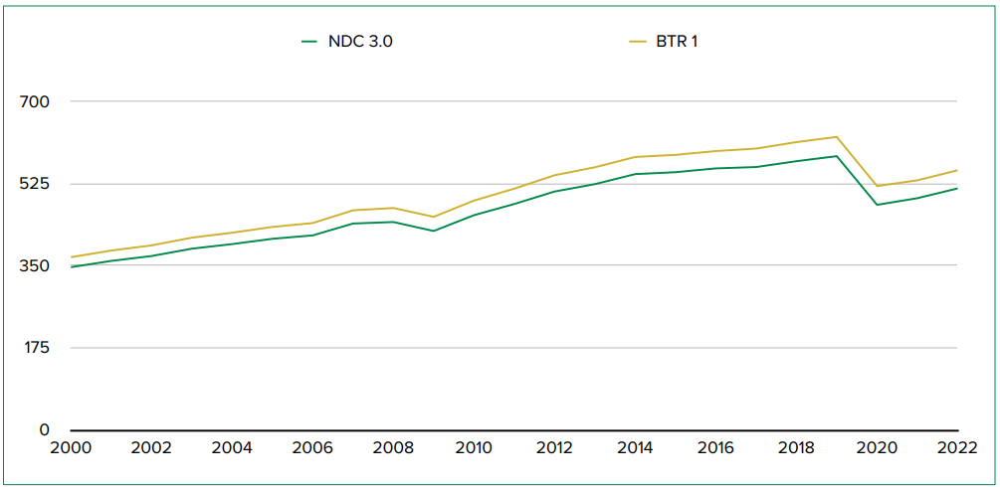
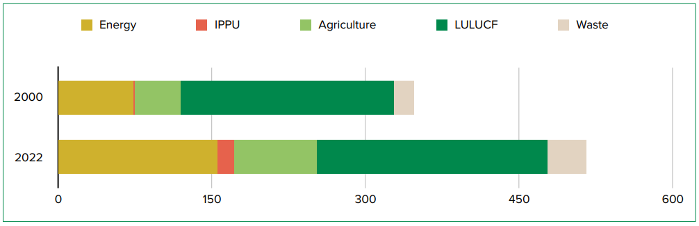
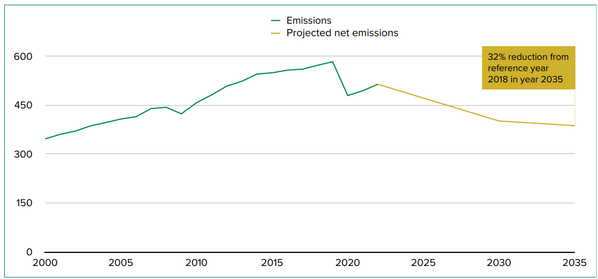
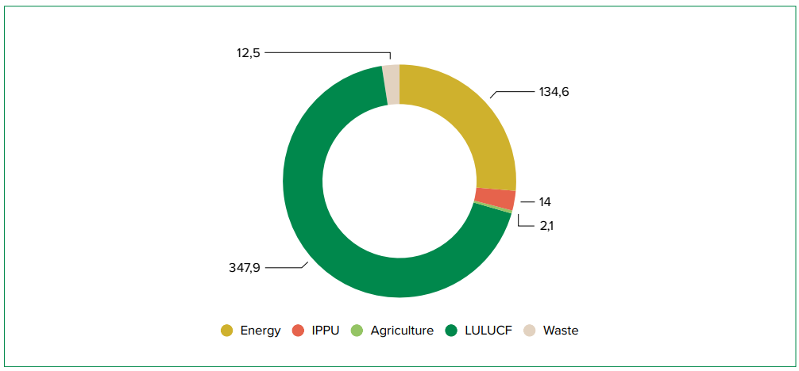
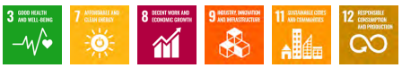
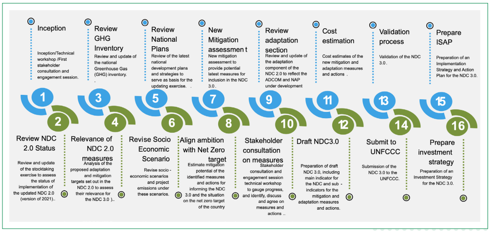

September 2025
µg Micro gram
°C Degrees Celsius
ACE Action for Climate Empowerment
ADCOM Adaptation Communication
AR5 Fifth Assessment Report
AR6 Sixth Assessment report
BAU Business-As-Usual
BTR Biennial Transparency Report
BUR Biennial Update Report
CCUS Carbon dioxide Capture, Use and Storage
CDRFI Climate and Disaster Risk Finance & Insurance
CE Circular Economy
CH4 Methane
CMA Conference of the Parties serving as the meeting of the Parties to the Paris Agreement
CMAP Carbon Market Activation Policy
CNG Compressed Natural Gas
CO2 Carbon Dioxide
CODE Connected Development
CO2e Carbon Dioxide Equivalent
CoP Conference of the Parties
CRAR Climate Risk Assessment Report
CSO Civil Society Organisation
DDP Deep Decarbonisation Pathway
DRE Decentralised Renewable Energy
DSM Demand Side Management
EEZ Exclusive Economic Zone
ETP Energy Transition Plan
FAO Food and Agriculture Organization of the United Nations
FCT Federal Capital Territory
FMEnv Federal Ministry of Environment
GCP Global Cooling Pledge
GDP Gross Domestic Product
GHG Greenhouse Gas
GII Gender Inequality Index
GRB Gender-Responsive Budgeting
GST Global Stocktake
GWP Global Warming Potential
HCWM Health Care Waste Management
HDI Human Development Index
HDR Human Development Report
HFC HydroFluoroCarbon
HUP-CCT Household Uplifting Programme Conditional Cash Transfer
IDP Internally Displaced Person
ILO International Labour Organisation
INDC Intended Nationally Determined Contribution
IPCC Inter-Governmental Panel on Climate Change
IPPU Industrial Processes and Product Use
ITMOs Internationally Transferred Mitigation Outcomes
LEAP Low Emissions Analysis Platform
LPG Liquified Petroleum Gas
LT-LEDS Long-Term Low-Emission Development Strategy
LULUCF Land Use, Land-Use Change and Forestry
m Metre
m3 Cubic metre
MDAs Ministries, Departments and Agencies
MEL Monitoring, Evaluation and Learning
M&E Monitoring and Evaluation
MOU Memorandum Of Understanding
MPI Multidimensional Poverty Index
MRV Measurement, Reporting, and Verification
MSME Micro-, Small, and Medium-sized Enterprises
Mt CO2 e Million tonnes carbon dioxide equivalent
N2O Nitrous Oxide
NA Nigeria Agenda
NAP National Adaptation Plan
NAPGCC National Action Plan on Gender and Climate Change
NBC National Building Code
NBSAP National Biodiversity Strategy and Action Plan
NBS Nature Based Solutions
NC National Communication
NCCC National Council on Climate Change
NCCCS National Council on Climate Change Secretariat
NCCPRS National Climate Change Policy and Response Strategy
NDC Nationally Determined Contribution
NERDC Nigerian Educational Research and Development Council
NF3 Nitrogen trifluoride
NA 2050 Nigeria Agenda 2050
NGOs Non-Governmental Organisations
NID National Inventory Document
NIRP National Integrated Resource Plan
nm Nautical mile
PA Paris Agreement
P-CAGE Presidential Committee on Climate Action and Green Economic Solutions
PFC Perfluorocarbon
PM Particulate Matter
RES Renewable Energy Scenario
SDG Sustainable Development Goal
SF6 Sulphur Hexafluoride
SLCP Short Lived Climate Pollutant
SMART Specific, Measurable, Achievable, Relevant, and Time-bound
SOP Standard Operating Procedures
SPEC Special Presidential Envoy on Climate Action
SRI Systems Rice Intensification
TV Television
TACCC Transparent, Accurate, Complete, Consistent and Comparable
TOT Training of Trainers
UAE United Arab Emirates
UN United Nations
UBEC Universal Basic Education Commission
UNCBD United Nations Convention on Biodiversity
UNCCD United Nations Convention to Combat Desertification
UNFCCC United Nations Framework Convention on Climate Change
UNICEF United Nations Children's Fund
US$ United States Dollar
UNSDF United Nations Sustainable Development Cooperation Framework
WASH Water, Sanitation and Hygiene
Foreword
As Nigeria continues its journey towards a sustainable, low-carbon, and climate-resilient future, the Third Nationally Determined Contribution (NDC 3.0) marks a pivotal milestone in our collective response to solve the global climate crisis. It is both a reaffirmation of our unwavering resolve and a significant step-up in ambition, reflecting our readiness to act decisively in the face of escalating climate risks and opportunities in a rapidly changing world.
Building on the foundational frameworks of the NDC 1.0 and NDC 2.0, this enhanced contribution embodies a strategic shift from emissions reductions measured against a business-as-usual scenario to ambitious, economy-wide absolute emissions reductions. Informed by the outcomes of the United Nations Framework Convention on Climate Change’s (UNFCCC) 2023 global stocktake, the findings of the 5th and 6th Assessment Report of the Intergovernmental Panel on Climate Change (IPCC), National Priorities, and the NDC Synthesis Report of 2024, Nigeria’s NDC 3.0 aligns our national development pathway with the imperative to limit global warming to 1.5 °C, while integrating adaptation and sustainable development as mutually reinforcing priorities.
With clearly defined mid-century pathways, Nigeria now commits to reducing greenhouse gas emissions by 29% by 2030 and 32% by 2035 compared to 2018 levels, moving decisively toward achieving net-zero emissions by 2060. These targets are underpinned by expanded sectoral coverage, strengthened climate governance, and robust implementation frameworks that ensure both environmental integrity and socio- economic advancement.
NDC 3.0 is deeply rooted in our national realities. It prioritises resilience-building, equitable growth, and a just transition that leaves no one behind, protecting vulnerable communities, creating green jobs, unlocking innovation, and ensuring inclusive prosperity. This document is not merely a policy statement—it is a declaration of collective will and a call to action. Its preparation was deliberately inclusive, drawing from the expertise, experiences, and aspirations of stakeholders across government, the private sector, civil society, academia, youth, women, Indigenous Peoples, elders, and persons with disabilities.
We recognise that delivering on the ambition of NDC 3.0 will require sustained political will, innovative partnerships, and significant mobilisation of finance, technology, both domestic and international, and substantial capacity building. With continued collaboration, Nigeria stands ready to play its role in the global effort to safeguard our planet, advance climate justice, and secure a resilient and prosperous future for generations to come.
His Excellency Bola Ahmed Tinubu (GCFR)
President of the Federal Republic of Nigeria
Nigeria has been actively engaged in international climate policy negotiations since it became a Party to the UNFCCC in 1994, its Kyoto Protocol in 2004 and the Paris Agreement in 2017. As per Article 4, paragraph 1 of the PA, Nigeria has committed to achieving a net- zero target by 2060. Nigeria is also signatory to the Global Methane Pledge and the Clean Air Coalition, treaties also aiming at the realisation of Article 2 of the Paris Agreement.
Nigeria submitted its Intended Nationally Determined Contribution (INDC) in 2015, its NDC 2.0 in 2021, and is now presenting its third version (NDC 3.0). Nigeria’s first Biennial Transparency Report (BTR1) submitted in December 2024 informed the Convention of its emissions, progress on mitigation and adaptation, and support received and needed, in line with the Modalities, Procedures and Guidelines of the Enhanced Transparency Framework of the Paris Agreement.
Nigeria has progressed and enhanced the ambition of its successive NDCs to be in accordance with the findings of the IPCC’s Fifth and Sixth Assessment Reports, and the first global stocktake. The NDC 3.0 further innovates with Nigeria now setting absolute emissions reduction targets in line with its net-zero goal by 2060. The NDC 3.0 is a roadmap and blueprint of the path the country will take to meet its net-zero target while building its resilience through the deployment of adaptation actions. Nigeria will be addressing emissions from all IPCC sectors while also deploying efforts to increase its removals, enhancing coverage in terms of gas and IPCC categories, with clear targets set, inclusive of emissions reduction potentials. Regarding adaptation, the NDC 3.0 caters for action under all sectors of the UAE Framework, once more with set targets. Additionally, Actions for Climate Empowerment (ACE) have also been identified to properly supporting mitigation and adaptation activities.
Nigeria, however, counts on the support of the global community to successfully implement its NDC 3.0 and contribute to the objectives of the UNFCCC. It is estimated that US$337 billion will be needed for implementing the NDC 3.0 alongside technology transfer and development, and capacity building.
Mrs Tenioye Majekodunmi
Director General, NCCC
The National Council on Climate Change (NCCC) extends its deepest appreciation to His Excellency, Bola Ahmed Tinubu, GCFR, President and Commander-in- Chief of the Armed Forces of the Federal Republic of Nigeria and Chairman of the National Council on Climate Change (NCCC), for his visionary leadership and unwavering support for Nigeria’s climate action agenda. His steadfast commitment to sustainability, environmental stewardship, and global cooperation underscores Nigeria’s determination to play a leading role in the global fight against climate change.
We also acknowledge the Honourable Minister of Environment for all his roles and guidance, and all members of the Council for their strategic guidance and dedication to the successful development of this enhanced Third Nationally Determined Contribution (NDC 3.0).
Special appreciation is extended to Ministries, Departments, and Agencies (MDAs) at both national and subnational levels for their invaluable technical contributions and data provision during the preparation of NDC 3.0. We commend the State Ministries of Environment across the 36 States of the Federation and the Federal Capital Territory and every other national stakeholder for their proactive engagement and alignment of state-level climate priorities with the national vision.
We gratefully recognise the development partners and international collaborators whose financial, technical, and advisory support ensured the robustness of this NDC 3.0, including the United Nations Development Programme (UNDP), Global Environment Facility (GEF), Deutsche Gesellschaft für Internationale Zusammenarbeit (GIZ), Foreign, Commonwealth & Development Office (FCDO), International Labour Organization (ILO), International organization for Migration, UN-Women, Food and Agriculture
Organization of the United Nations (FAO), Netherlands Embassy, and UNICEF. We express a special note of gratitude to the United Nations Secretary General for having mobilised the entire UN System in support of our NDC 3.0 under the Climate Promise 2025.
We acknowledge the vital role of the NDC Partnership in mobilising its members and partners to support this process. Their facilitation in the various consultative engagements has been instrumental in achieving this outcome. As we move towards the implementation phase of NDC 3.0, we look forward to their continued efforts in securing additional support.
Our gratitude extends to civil society organisations, academia, private sector stakeholders, youth networks, women groups, Indigenous Peoples, and persons with disabilities, whose active participation and diverse perspectives helped ensure that NDC 3.0 reflects Nigeria’s inclusive approach.
We extend our sincere thanks to Climagric Ltd, the lead consultancy firm supporting the NDC 3.0 updating process, whom spared no effort to produce this document.
We acknowledge the UN Climate Change Regional Collaboration Centre for West and Central Africa (RCC WACA) for the technical support and facilitations for the development of the NDC 3.0
We acknowledge the dedication and expertise of the NCCC Staff, led by Mrs. Omotenioye Majekodunmi, Director General of NCCC, whose leadership, coordination, and commitment were central to the successful completion of this process.
Finally, we salute all Nigerians, particularly those in vulnerable and climate-impacted communities whose resilience, lived experiences, and aspirations are the true driving force behind the ambition of NDC 3.0.
BOX 1 | Article 2, paragraphs 1(a) and 1 (b) of the Paris Agreement
Holding the increase in the global average temperature to well below 2°C above pre-in- dustrial levels and pursuing efforts to limit the temperature increase to 1.5°C above pre-in- dustrial levels, recognizing that this would significantly reduce the risks and impacts of climate change.
Increasing the ability to adapt to the adverse impacts of climate change and foster climate resilience and low greenhouse gas emissions development, in a manner that does not threaten food production.
Nigeria’s commitments
The Federal Republic of Nigeria ratified the United Nations Framework Convention on Climate Change (UNFCCC) on 29 August 2004 as a Non-Annex 1 Party, its Kyoto Protocol on 10 December 2004 and the Paris Agreement (PA) on 16 May 2017. In doing so, Nigeria affirmed its commitment to the global agenda towards meeting the objective of Article 2, paragraphs 1(a) and 1(b) of the PA.
As per Article 4, paragraph 1 of the PA, Nigeria has committed to achieving net- zero emissions by 2060. Additionally, as a Party to the Global Methane Pledge,1 Nigeria has committed to eliminate routine flaring by 2030 and to reduce fugitive emissions from leaks in the oil and gas industry by 95% by 2050.
Nigeria submitted its Intended Nationally Determined Contribution2 (INDC) in 2015 to conform with Decisions 1/CP.19 and 1/CP.20 of the Conference of the Parties (CoP). In line with Article 4 of the PA and Decision 1/CP.21 of the UNFCCC, Nigeria revised its INDC, to produce its NDC 2.0 in 2021, and is now presenting its third version (NDC 3.0). Nigeria has also prepared and submitted its Long-Term Low-Emission Development Strategy (LT-LEDS)3 in 2024, two Biennial Update Reports (BURs), and its first Biennial Transparency Report4 (BTR1) in December 2024 to inform the Convention of its emissions, progress in implementing mitigation and adaptation, and support received and needed.
Furthermore, Nigeria has prepared and submitted its Adaptation Communication5 (ADCOM) in 2022 and is completing the preparation of its National Adaptation Plan (NAP) after finalising the country’s Climate Risk Assessment Report (CRAR).
The Federal Republic of Nigeria sets an ambitious target to achieve an absolute emissions reduction of 184.9 Mt CO2e in 2035 from the emissions of 573.5 Mt CO2e in 2018, which represents a 32.2% reduction.
The total mitigation potential for each sector is as follows: the energy sector, including both fugitive emissions and solid fuel transformation, is 31.2 Mt CO2e; the fuel combustion sector totals 103.4 Mt CO2e; the IPPU sector has a combined potential of 14.0 Mt CO2e; the agriculture sector contributes 2.1 Mt CO2e; the LULUCF sector has a mitigation potential of 347.9 Mt CO2e; and the waste sector has a total of 12.5 Mt CO2e.
Looking at specific high-impact measures, the Federal Republic of Nigeria emphasizes several key areas with a mitigation potential of over 20 Mt CO2e. In the energy sector, the goal to achieve a 60% reduction in fugitive emissions (leaks and venting) from the oil and gas industry is a major focus with a mitigation potential of 27.3 Mt CO2e. The transport sector also stands out, with a significant mitigation potential of 44.3 Mt CO2e from the widespread adoption of electric and CNG vehicles. Additionally, within the LULUCF sector, Nigeria aims to lower the deforestation rate by 60%, which offers a substantial mitigation potential of 304.8 Mt CO2e, while also pursuing a mitigation potential of 34.4 Mt CO2e by increasing forest area through reforestation and afforestation.
Geography, Climate and Socio-economics
Nigeria is the most populous country on the African continent with some 233 million people in 2024 6 and the sixth most populous country in the world representing 2.89% of the global population. Situated in West Africa and covering an area of 923,768 square kilometers, Nigeria is a federal territory comprising 36 states and the Federal Capital Territory. Geographically, the country extends from coastal swamps in the south through tropical forests, open woodlands, grasslands, and Arid and Semi – aris lands in the far north. The highest region is the Jos Plateau, culminating at 2,000 metres above sea level.
The country is characterised by three distinct climate zones: a tropical monsoon climate in the south, a tropical savannah climate for most of the central regions, and a Sahelian hot and semi-arid climate in the north. This results in a gradient of declining precipitation amounts from south to north of the country. The southern regions experience strong rainfall events during the rainy season from March to October with annual rainfall usually amounting to 2,000 mm and above, and in some areas, such as the Niger Delta, this can reach 4,000 mm and above.
Nigeria’s Gross Domestic Product (GDP) was estimated at US$568 billion7 in 2024. Economic growth in Nigeria slowed from 3.3% in 2022 to 2.9% in 2023 due to high inflation and sluggish growth in the global economy but increased to 3.54% in 2024. Growth was driven by services and agriculture on the supply side, and by consumption and investment on the demand side. Some of the natural resources of the country include petroleum, natural gas, tin, columbite, iron ore, coal, limestone, lead, and zinc.
Nigeria relies heavily on the oil and gas industry, which accounts for two-thirds of government revenue and 90% of foreign exchange earnings.8 The sector is called upon to further grow while adopting sustainability measures such as phasing out routine flaring and substantially reducing fugitive emissions. Natural gas use will be boosted, serving as a key transition fuel in Nigeria’s move towards increased adoption of renewable energy for meeting its net-zero emissions target.
Emissions
Nigeria’s latest greenhouse gas (GHG) Inventory was submitted to the UNFCCC in 2024 along with its BTR1. For NDC 3.0, this GHG inventory was updated following the availability of new datasets from the UN Database for the Energy sector for the full time series regarding biomass consumption. In addition, estimated fuel consumption data, which were not available from the UN Database, have now been replaced with actual data, that has been made available for the year 2022. Furthermore, the scope has been widened with the inclusion of the Refrigeration and Cooling category —in response to the implementation of the National Cooling Action Plan—and data on the area of irrigated rice from the National Rice Development Strategy II has been used. The recalculation of the GHG inventory led to a slight decrease of around 7% in national net emissions, due to a reduction in the amount of biomass (fuelwood and charcoal) consumed as per the new dataset from the UN Database. Net national emissions fell from 554.1 Mt CO2 e to 515.3 Mt CO2 e for the year 2022. Figure 1 presents national net emissions for the time series 2000 to 2022 for the BTR1 and the updated NDC 3.0 GHG inventories.

Figure 1 | Comparison of net national emissions (Mt CO2 e) of updated GHG inventory and BTR1 (2000 - 2022)Net emissions, when considering removals, increased from 347.2 Mt CO2 e in 2000 to 515.3 Mt CO2 e in 2022, corresponding to an increase of 168.1 Mt CO2 e (48%).
The highest emitting sector over the full time series is Land Use, Land-Use Change and Forestry (LULUCF) followed by Energy, Agriculture, Waste, and Industrial Production and Product Use (IPPU). Between 2000 and 2022, net emissions increased by 8% in the LULUCF sector, 111% for Energy, 82% for Agriculture, 99% for Waste, and 1,236% for IPPU (Figure 2).

Figure 2 | Sectoral net emissions (Mt CO2 e) for the years 2000 and 2022
CO2 remains the major gas emitted over the time series 2000 to 2022, making up about 70% of emissions while CH4 and N2O represent around 24% and 5% of emissions, respectively. The contribution of fluorinated gases to national emissions is minimal at about 1%. Emissions of PFCs and NF3 are yet to be identified while SF6 is not yet included due to lack of data.
Mitigation
Mitigation activities span the five IPCC sectors: Energy, IPPU, Agriculture, LULUCF, and Waste. Gases covered include CO2, CH4, N2O, and HFCs.
Policies, measures, and actions that sustain the implementation and achievement of Nigeria’s NDC under Article 4 of the PA focus primarily on the adoption of renewables for producing electricity, improving both supply and demand side energy efficiency, phasing out of routine flaring, fuel transformation, road transportation, rice cultivation, climate smart agriculture, afforestation, reforestation, ecosystem preservation, and solid waste management. These measures and policies cut across IPCC sectors and categories and most of the latter are key categories, sometimes under both level and trend assessments, with and without LULUCF. The BTR1 report revealed a reduction of 10% in national emissions in 2022 relative to the baseline year of 2018. More precise evaluations are not possible due to the system for tracking mitigation under Article 4 of the PA is still not fully functional.
Support
An analysis9 of the climate finance ecosystem in Nigeria for the period 2015 to 2021 by Connected Development (CODE) in partnership with INKA Consult and Oxfam was published in December 2024. This report highlights the debt dimension of climate finance which adds to the burden of the country. Nigeria received nearly US$4.93 billion in climate finance between 2015 and 2021, to support 828 projects across key sectors like Agriculture, Energy, Forestry, Water, and Education. With 2020 as the peak year, an average of 118 projects were implemented annually, and adaptation finance slightly outweighed mitigation. Funding was dominated by concessional loans (75%), primarily from the World Bank and bilateral partners. In addition to this support, domestic investments contributed another 19%, with the remainder coming from other sources. The national budget covered about 14% of NDC or climate action implementation costs.
The management of climate finance in Nigeria is overseen by the National Council on Climate Change (NCCC) under the Climate Change Act and is anchored in national policies such as the National Climate Change Policy.10 Subnational entities face capacity challenges in accessing international funds. Civil Society Organisations (CSOs) have stepped in to bridge gaps in transparency and public engagement, using models like “Follow the Money” and community media collaborations. To strengthen climate finance, the report recommends boosting domestic resource mobilisation, enhancing local government capacity, integrating climate priorities into budgets, and fostering partnerships with the private sector and CSOs.
In its BTR1, Nigeria highlighted the need for support related to technology development and transfer as well as capacity building for implementing the NDC 2.0. Twenty-two of the actions identified for support contribute to technology development and transfer, and 32 require capacity building. Based on the BTR1, almost all technologies transferred were beyond the development stage. That is, well developed and proven technologies have been successfully transferred if there is a capacity building component accompanying the demonstration, deployment and diffusion process. Research and development are not overlooked but require resources that are not readily available for implementation.
Adaptation
The 2023 Notre Dame Global Adaptation Index11 (ND-GAIN) ranks Nigeria as the 62nd most-vulnerable country and the 20th least-ready country globally to adapt to climate change (out of 192 countries). Various national reports highlight the high vulnerability of the country and the need for multi-sectoral adaptation. The compounding effects of climate change on key national socio-economic sectors are seriously impacting the livelihood of the population. Additionally, certain socio-economic and demographic groups, such as women, female heads of households, children, the elderly, the chronically sick and Pndigenous Peoples are particularly vulnerable to the brunt of climate change. These groups, a significant portion of Nigeria’s social fabric, also typically have a low adaptive capacity due to lack of access to resources. They are more likely to experience exclusion from society due to their high levels of dependence on others for their living, including food security, mobility, and access to information. Another critical issue is that climate change contributes to violence and conflicts in some regions due to low adaptive capacity. Climate change is causing shortages and competition for natural resources such as land, pasture, and water, key primordial natural resources for sustaining the livelihood of the communities in these regions.
Extreme weather events have been increasing steadily during the last decade. Extreme weather patterns, namely more powerful, longer dry seasons and shorter, more intense rainy seasons are exacerbating the situation of local communities. Extensive cultivation and overgrazing have sparked land degradation and desertification, resulting in substantial expanses of land becoming unproductive. Unpredictable and higher-intensity rainfall, especially in the southern region of Nigeria is resulting in crop losses and the displacement of communities. Climate change is affecting the economy of Nigeria due to loss and damage to infrastructure, farmland, real estate, and human settlements. Adaptation is therefore critical to protect and safeguard Nigeria’s economy and society from future climatic extreme events while preventing further loss and damage.
Nigeria has developed national and sectoral policies, strategies and action plans to address its adaptation challenges. Adaptation issues are addressed using a sectoral approach. As per the BTR1, the priority key sectors are Agriculture (Crops and Livestock); Freshwater Resources, Coastal Water Resources and Fisheries; Forests and Biodiversity; Health and Sanitation; Human Settlements and Housing; Energy; Transportation and Communications; Industry and Commerce; Disaster reduction, Migration and Security; Livelihoods; Vulnerable Groups and Education. Nigeria’s vulnerability to climate change and limited adaptive capacity is compounded by low social protection coverage which stands at 14.8 per cent of the population. There are also cross-cutting issues such as gender, finance, and loss and damage that must be addressed for building resilience. Key adaptation measures implemented to-date comprise climate smart agriculture, watershed management, ecosystem preservation and restoration, improving risk management, deployment of early warning systems, and infrastructure and livelihood protection. However, numerous challenges constrain effective adaptation.
Nigeria recognises that even with scaled adaptation, residual risks from floods, droughts, heatwaves, and coastal hazards will persist and can derail development and fiscal stability. Building on the ADCOM (2022) and the forthcoming NAP, Nigeria will develop and implement a national Climate and Disaster Risk Finance & Insurance (CDRFI) approach grounded in risk layering (risk reduction, risk retention, contingent credit and risk transfer). This will ensure rapid, predictable liquidity for emergency response and early recovery, protect vulnerable households and micro-, small, and medium-sized enterprises (MSMEs), and safeguard public investment. This approach will be aligned with the NAP and integrated into this NDC’s implementation framework.
Development Priorities of Nigeria
Nigeria started the process of developing climate change policies in 2013 with the National Climate Change Policy and Response Strategy (NCCPRS). It aims to foster a low-carbon, high economic growth development pathway while building a climate-resilient society through the attainment of set goals. The strategy explicitly identifies climate change as one of the major threats to economic development objectives and food security. The NCCPRS has been revised and updated to cover the period 2021-2030 as the National Climate Change Policy. Nigeria has continuously mainstreamed climate change in its national and sectoral policies, and more recently further progressed in scaling up the same process at the subnational (states) and regional (local government) levels, though the latter two are not yet exhaustive.
Nigeria has declared and confirmed its low-carbon, climate- resilient development pathway to secure high economic growth within a circular economy approach, achieving the Sustainable Development Goals (SDGs) and ensuring a just energy transition with natural gas serving as a transition fuel. Nigeria has developed various policy documents to translate this agenda into reality, namely the Long-Term Low-Emission Strategy (LT-LEDS) in 2024, in line with Article 4, paragraph 19 of the PA, towards just transitions to net-zero emissions by or around mid-century, considering the country’s common but differentiated responsibilities and capabilities, and its national circumstances. The development of the LT-LEDS was informed by the Nigeria Agenda 205012 (NA 2050) document of 2023, the Adaptation Communication (ADCOM) of 2022, the Energy Transition Plan13 (ETP) of 2024, the Deep Decarbonisation Pathway14 (DDP) of 2024, National Development Plan (2021- 2025), the Carbon Market Activation Policy (CMAP), and various other sectoral policies and plans.
⊲ Nigeria Agenda 2050 is formulated against the background of existing economic and social challenges and against the necessity to tackle them within the framework of long- and medium-term development plans. The challenges include low, fragile, and non-inclusive economic growth and development, high population growth rate, pervasive insecurity, limited concentric economic diversification and transformation of the economy, low productivity, and high import dependence. Other challenges include an unfavourable business environment and limited external competitiveness, low industrialisation, huge infrastructural deficits (transport and power), governance challenges, climate change, limited fiscal space and high incidences of poverty, unemployment, and inequality. The Nigeria Agenda 2050 is the long-term economic transformation blueprint of Nigeria to address the aforementioned developmental challenges and become an upper middle-income country, with an average real GDP growth rate of 7 %, nominal GDP of US$11.7 trillion by 2050, and an end period per capita income of US$33,328 per annum. The purpose of this perspective plan is to fully engage all resources to achieve inclusive growth, reduce poverty, achieve social and economic stability, create a sustainable environment that is consistent with global concerns about climate change, and generate opportunities for all Nigerians to fully develop their potential. The country can achieve these laudable objectives by effectively engaging its youthful and vibrant workforce. More specific strategies, programmes, interventions, and the important task of implementation will be articulated through six five-year medium-term plans: NDP (2021-2025) (already approved, published, and being implemented), (2026-2030), (2031-2035), (2036-2040), (2041-2045), and (2046-2050).
⊲ The current National Development Plan (2021-2025) targets 4.6% annual growth, 21 million full-time jobs, and poverty reduction for 35 million people.
⊲ The first ADCOM, developed and submitted to the UNFCCC in line with Article 7, paragraphs 10 and 11 of the PA, provides information on the country’s national circumstances regarding adaptation, its plans and priorities, implementation challenges, achievements as well as support needs.
⊲ The DDP was conceived to appropriately respond to the low-emissions development commitment of the Government of Nigeria to the UNFCCC, namely to achieve net-zero emissions by 2060, in accordance with the Climate Change Act of 2021.
⊲ The National Integrated Resource Plan (NIRP) of 2024 supersedes the ETP and is the latest document charting the developments in the electricity sector to the 2045 time-horizon.
⊲ The CMAP aims to establish a well-structured and transparent carbon market, providing a conducive environment for both local and foreign investments. It reflects Nigeria’s ambition to become a leader in carbon market development which will serve to generate funds for implementing NDC actions and also as a model for other developing countries.
In addition to the documents listed above, other key policies informing the preparation of the NDC 3.0 are the: National Forest Policy (2006), National Health Policy15 (2016), National Water Resources Policy (2016), Nigeria’s National Action Plan to Reduce Short-Lived Climate Pollutants16 (2018), National Gender Policy (2021), National Energy Policy 2022), National Agricultural Technology and Implementation Policy NATIP 2022-2027), National Clean Cooking Policy (2024), National Policy on Marine and Blue Economy (2025), National Policy on Solid Waste Management 2020), National Livestock Transformation Plan 2019-2028 (2019), National Dairy Policy (2022) and National Cooling Action Plan for Nigeria (Revised 2022).
Legal & Institutional Framework
The Climate Change Act of 202117 provides the legal framework for all climate change activities through the NCCC, with the recently created Office of the Special Presidential Envoy on Climate Action acting as a supervising interface between the Secretariat of the National Council on Climate Change (NCCC) and the NCCC Supervising Council, which is chaired by the President. The NCCC is responsible for administrative and procedural arrangements for domestic implementation, monitoring, reporting, archiving of information, and stakeholder engagement related to the implementation and achievement of Nigeria’s obligations under the UNFCCC.
Members of the Council comprise all federal ministries, the states and other representatives from umbrella organisations for civil society (women, youth, and persons with disabilities), the private sector as well as the financial sector. The Climate Change Act stipulates the necessary institutional arrangements, including clear roles and responsibilities, relative to the implementation and reporting on climate actions under the UNFCCC. One of its functions is to “coordinate the implementation of sectoral targets and guidelines for the regulation of GHG emissions and other anthropogenic causes of climate change.” However, NCCC is not fully operational, and its operationalisation is progressing. Since its establishment, the NCCC has successfully delivered on key issues such as the preparation of the LT-LEDS and BTR1 and is continuing with the revision and updating of the NDC for the 3.0 version as well as the development of the combined BTR2/NC4.
NCCC is also responsible for Internationally Transferred Mitigation Outcomes (ITMOs). It has a draft framework and Manual of Procedures for Article 6 and a carbon registry is forthcoming. It is presently looking into the development and implementation of a mechanism for carbon emission trading in collaboration with the federal Ministry responsible for Environment and the federal Ministry responsible for Trade. All stakeholders and members of the Council are fully engaged in all climate change actions, including those of the NDC, BTR, and NC activities among others.
Nigeria submitted its NDC 2.0 in 2021 with 2018 as the base year and emissions estimated for that year at 347 Mt CO2 e. During the preparation of its BTR1 in 2024 and in accordance with paragraphs 65 to 67 of the MPGs, the country provided updates based on its revised GHG inventory. The new emission data, based on the BTR1 GHG inventory are: 614 Mt CO2 e for the base year 2018; a projection of 1,052 Mt CO2 e for 2030; an unconditional emission reduction of 210 Mt CO2 e; and a conditional emission reduction of 494 Mt CO2 e for 2030. The increase in the level of emissions in the 2024 GHG inventory is the result of including emissions from wood removals and biomass losses due to deforestation, which were not accounted for in the inventory used to prepare NDC 2.0.
As a result, the emissions for 2018, recalculated at 614 Mt CO2 e are 267 Mt CO2 e higher than the estimates reported in the NDC 2.0. This adjustment has been reported in Nigeria’s BTR1. Table 1 provides a comparison of the revised NDC 2.0 emissions and emissions reductions with those based on the recalculated GHG inventory of the BTR1.
Table 1 | Comparison of emissions reduction (Mt CO2 e) targets of the NDC 2.0 under 2 GHG inventories
|
NDC 2.0 GHG Inventory (Mt CO2 e) |
BTR1 GHG Inventory (Mt CO2 e) |
|
|
2018 emissions |
347 |
614 |
|
2030 projection |
453 |
1,052 |
|
Emissions reduction from unconditional target (- 20%) |
91 |
210 |
|
2030 emissions (unconditional) |
362 |
842 |
|
Emissions reduction from conditional target (- 47%) |
213 |
494 |
|
2030 emissions (conditional) |
240 |
558 |
As a reminder, the GHG inventory of the BTR1 has been updated during the NDC 3.0 development process to better reflect national emissions. The update included adoption of new energy-sector data from the UN database, expansion of scope to include Refrigeration and Air Conditioning, and incorporation of new data on the area of irrigated rice. Details on this updated GHG inventory are provided in the Emissions section in the National Circumstances chapter.
The base year of 2018 adopted in the NDC 2.0 is maintained in the NDC 3.0 to better reflect progress and the national situation. Therefore, the absolute-emission-reduction approach—rather than a business-as-usual (BAU) approach—is determined relative to the recalculated 2018 baseline as reference year.
Ambition
Nigeria adopted the approach of reducing its emissions relative to a BAU in its NDC 1.0 and 2.0. Conscious of the threat posed by climate change and its endeavour to strongly support the global agenda, Nigeria is aligning this NDC 3.0 with the outcomes of the GST, notably transitioning from the BAU scenario to an economy-wide absolute emissions reduction. Additionally, this approach better fits and aligns with the net-zero emissions target of the country as well as the pledge made for reducing methane emissions, commitments taken by the country during CoP26 in Glasgow.
The revision and updating of Nigeria’s NDC 3.0, as per Decision 4, paragraph 2 of the PA, haS been guided by the outcomes of the UNFCCC’sGST exercise of 2023, the findings of the IPCC Sixth Assessment Report (AR6) of 2023 and the 2024 NDC Synthesis Report. The GHG inventory and mitigation elements of the BTR1 also informed the NDC 3.0 update as well as numerous national and sectoral policy documents, developed to align the low-carbon, climate-resilient sustainable development agenda of the country with the decisions of the CoP regarding mitigation and adaptation as well as cross-cutting issues, and to be in line with global expectations. All measures and actions retained for inclusion in the NDC 3.0 originated from these policy documents.
The NDC 3.0 is in full alignment with the LT-LEDS of Nigeria with some adjustments made to increase ambition, scope of actions and a reviewed implementation date of a few technologies due to delays in rolling out the activities of the NDC 2.0. The LT-LEDS chartered the path for meeting the net-zero commitment of the country by 2060. However, the LT-LEDS did not set any specific intermediate target which is now determined and presented in this NDC 3.0.
The NDC 3.0 targets also contribute to the achievements of the Mission 300 Compact.18 The major targets are: 100% electricity access by 2030, 50% renewable energy share in the generation mix by 2030 and 9% annual pace of new electricity connections until 2030.
NDC targets, policies and measures aim for the highest possible ambition, reflect the outcomes of the GST, are aligned with pathways towards limiting the global temperature rise to 1.5°C, and reflect Nigeria’s common but differentiated responsibilities and respective capabilities, in light of its national circumstances.
With the transition from an emission reduction % relative to the BAU scenario to an economy-wide absolute emissions reduction as recommended by the GST, Nigeria is now targeting net zero by 2060. Intermediate targets are absolute emissions reductions of 168.2 Mt CO2 e in 2030 and 184.9 Mt CO2 e in 2035 from base year 2018 towards net zero by 2060. These economy-wide absolute emissions reductions represent 29% and 32% of net national emissions of 2018, in 2030 and 2035, respectively, as shown in Figure 3. Nigeria maintains its 20% unconditional objective and views the conditional reduction at 80% of the 29% and 32% reduction of the estimated 2018 emissions in 2030 and 2035, respectively.

Figure 3 | Historical (up to year 2022) and projected net emissions (Mt CO2 e) under maximum ambition (2030 - 2035)In 2030, the LULUCF sector (73.7%) will contribute the most in terms of absolute emissions reduction followed by the Energy sector (including buildings and transport) (22.0%), IPPU (2.0%), Waste (1.9%), and Agriculture (0.4%). The order stays the same in 2035 with LULUCF at the top (68.1%), followed by Energy (including buildings and transport) (26.3%), IPPU (2.7%), Waste (2.5%) and Agriculture (0.4%). The major contribution comes from the LULUCF sector as a result of reducing deforestation and cutting down wood removal for use as fuelwood, which are directly linked with the provision of alternate clean fuels coupled with the adoption of improved stoves for cooking in the residential, commercial and manufacturing industries categories. Figure 4 shows the absolute economy-wide emissions reductions by IPCC sector resulting from the mitigation measures earmarked for implementation by the year 2035.
Figure 4 | Emissions reduction (Mt CO2 e) by sector by 2035

Furthermore, Nigeria is addressing 19 IPCC source categories in its NDC 3.0 compared to 11 in its NDC 2.0 while increasing the number of measures/actions from 24 in the NDC 2.0 to 39 by 2035 in the NDC 3.0. This enhanced ambition has been worked out to align with the PA temperature goal, as per paragraph 37 of the GST and taking into consideration the country’s national circumstances. These measures and actions are depicted in Tables 2 to 8, by IPCC sector, including cross-cutting measures.
Table 2 | Mitigation measures and actions for Energy - Fuel combustion
Increase the share of renewable energy in electricity generation
Measure 1
Fuel Combustion - Energy Industries - Electricity Generation
Sector: Energy

Action
Achieve 52% of on-grid and off-grid generation capacity from renewable energy sources through installed capacities of 10,400 MW Hydro, 5,700 MW Solar, 17,000 MW Gas, 2,500 MW DSM
Mitigation potential 12.220 Mt CO2 e
Measure 2 Implement Energy Efficiency measures in the electricity sector
Actions
Replace 100% diesel and single cycle steam turbines with combined cycle ones by 2030
Transition to improved Minimum Energy Performance Standards for energy-efficient air conditioning and refrigeration equipment in residential, commercial and public buildings
Review and update the National Building Code (NBC) to integrate energy efficiency and climate resilience, with clear provisions for adoption in all states
Measure 3
Fuel Combustion - Manufacturing Industries and Construction
Mitigation potential Action 1: 5.018 Mt CO2 e, Action 2: 6.229 Mt CO2 e, Action 3: Not estimated
Action
Increase self-captive generation capacity using cleaner fuels by installing 7 GW (50% renewable and 50% natural gas)
Measure 4
Introduce green or blue hydrogen and nuclear after 2035 (included to be in line with GST report) and to be determined under the National Green Hydrogen Policy under development, and implementation of electricity generation from nuclear plants as per the NIRP 2024
Mitigation potential 8.462 Mt CO2 e
Emission reductions in Transport category
Measure 5
Fuel Combustion - Transport
Mitigation potential Not estimated
Source: TBC
Actions
Adoption of cleaner fuel to replace diesel with 50% of locomotives using compressed natural gas (CNG) by year 2035
Wide adoption of electric vehicles and wide deployment of CNG vehicles for road transport to achieve 30% of cars, HDV and LDV fleet that transition to electricity and 20% cars, HDV and LDV fleet that use CNG
Mitigation potential Action 1: 0.026 Mt CO2 e, Action 2: 44.286 Mt CO2 e
Measure 6 Implement Energy Efficiency measures in the road transport category
Action Adopt EURO IV standards for 100% vehicles by 2030
Mitigation potential 0.670 Mt CO2 e
Measure 7 Modal shift for mass transit
Actions
Increasing passenger kilometres using the Bus Rapid Transport (BRT) to reach 22% of passenger kms travelling by bus
Increasing passenger kilometres using the metro in Abuja and Lagos
Measure 8
Reducing emissions in the Aviation industry as Nigeria is exploring the adoption of Lower Carbon Aviation Fuel and Sustainable Aviation Fuel to partially replace Jet kerosene
Mitigation potential Action 1: 16.234 Mt CO2 e, Action 2: Not estimated
Adoption of efficient lighting by households
Measure 9
Fuel Combustion - Other Sectors - Commercial, Institutional, and Residential
Mitigation potential Not estimated
Action 100% of households use efficient lighting with elimination of incandescent bulbs
Mitigation potential 1.111 Mt CO2 e
Measure 10 Reduce emissions in the Commercial, Institutional, and Residential categories
Actions
Reduction in use of generators by 30%
Curtailing emissions using lower emitting appliances in the residential and commercial categories
Boost adoption of efficient cookstoves
Enhance adoption of clean fuel technologies for cooking to displace fuelwood in Urban and Rural households as well as Commercial cooking with the following targets:
Commercial cooking: 37% Electricity, 35% LPG, 13% efficient wood cookstoves, 10% wood, 3% kerosene, and 2% charcoal
Rural households: 27% Electricity, 31% LPG, 22% efficient wood stove, 18% wood, and 2% charcoal
Urban households: 55% Electricity, 35% LPG, 6% efficient wood cookstoves, 2% wood, 1% kerosene, and 1% charcoal
100% phasing out of kerosene used for lighting
Mitigation potential Action 1: 5.735 Mt CO2 e, Action 2: Included in Measure 2 Action 2, Actions 3 and 4: 1.740 Mt CO2e, Action 5: 1.630 Mt CO e
Table 3 | Mitigation measures and actions for Energy - Fugitive emissions
Reduce production of charcoal
Measure 11
Fugitive emissions - Solid fuel transformation
Sector: Energy
Action Charcoal production reduced by 56%
Adopt sustainable practices in the Oil and Gas Industry
Measure 12
Fugitive emissions - Oil and Gas Industry
Mitigation potential 1.844 Mt CO2 e
Action
Zero routine gas flaring achieved by 2030
60% reduction in fugitive emissions (leaks and venting) by 2035
Mitigation potential Action 1: 2.043 Mt CO2 e, Action 2: 27.320 Mt CO2 e
Table 4 | Mitigation measures and actions for IPPU
Reduce emissions in the cement industry
Measure 13
Mineral Industry - Cement Production
Sector: IPPU
Action Substitute 10% clinker in 33% of cement produced with fly ash
Reduce emissions from products used for Refrigeration and Air-Conditioning
Measure 14
IPPU - Refrigeration and Air Conditioning
Mitigation potential 0.690 Mt CO2 e
Actions
Introduce low-global watming potential (GWP) refrigerants and achieve targets outlined in National Cooling Action Plan for number of new equipment with low-GWP refrigerants
Promote recovery of HFCs from retiring equipment
Mitigation potential Actions 1 and 2: 13.322 Mt CO2 e
Table 5 | Mitigation measures and actions for Agriculture
Upscale adoption of ranching for cattle inclusive of dairy production
Measure 15
Agriculture - Enteric fermentation
Sector: Agriculture
Actions
Implement demonstration farms and promote the adoption of ranching to reach 15% of the cattle population by 2035
Use supplements and high-quality feeds to improve digestion and reduce enteric fermentation in the ranching projects
Improved manure management system for production of biogas
Measure 16
Agriculture - Manure Management
Mitigation potential Actions 1 and 2: 1.582 Mt CO2 e
Action Construction of climate-smart housing to aid effluent/faecal collection for biogas production
Lower methane emissions from rice cultivation
Measure 17
Agriculture - Rice production
Mitigation potential No target set
Action Systems Rice Intensification is adopted on 40% in 40% of irrigated rice production.
Mitigation potential 0.547 Mt CO2 e
Enhance mitigation through the adoption of circular economy practices within the Climate Smart Agriculture concept on 20% of cropland area
Measure 18
Agriculture - Agricultural Soils
Action
Promote composting of crop residues and agricultural waste for use to improve soil fertility and increase soil carbon
Mitigation potential 5.515 Mt CO2 e – Accounted under LULUCF for soil carbon
Table 6 | Mitigation measures and actions for LULUCF
Increase sink capacity of national forests (25% of national area) while addressing deforestation through reduced wood removal
Measure 19
LULUCF - Forest Land
Sector: LULUCF
Actions
Lower deforestation rate by 60%
Increase area under forests through reforestation and afforestation at the rate of 250,000 ha and plant 25 million trees under agroecology and in settlement areas annually
Establish 130,000 ha of forests reserves, conserve 13,000 ha of mangroves, and restore and protect 162,000 ha of degraded forests
Promote and establish 75,000 ha of community forest, and manage for ecosystem services, including sustainable wood removal
Mitigation potential Action 1: 304.803 Mt CO2 e, Action 2: 34.419 Mt CO2 e, Action 3: 2.386 Mt CO2 e, Action 4: 0.782 Mt CO e
Measure 20 Enhance removals through the preservation and restoration of oceans and coastal ecosystems
Actions
Enhance restoration, protection and conservation of mangroves and coastal wetlands
Promulgate marine protected areas
Mitigation potential Action 1 partly covered under Measure 19, Action 3
Table 7 | Mitigation measures and actions for Waste
Upscale recycling activities while decreasing solid waste generation at source
Measure 21
Solid Waste Disposal System
Sector: Waste
Action
Recover and channel 50% of organic waste for composting to reduce the amount reaching disposal sites
Mitigation potential 9.205 Mt CO2 e
Waste - Incineration and open burning of waste
Action
Reduce open burning of waste by 40% through sorting and recycling of waste of fossil origin (plastic, PET etc.)
Mitigation potential 3.053 Mt CO2 e
⊲ Waste - Industrial wastewater
Adoption of aerated wastewater treatment system, with low-emitting technology, by industries and in urban settlements
Measure 22
Waste - Wastewater
Action 10% of industries adopt low-emitting wastewater treatment systems by 2035
Mitigation potential 0.034 Mt CO2 e
⊲ Waste - Domestic wastewater Action Develop centralised wastewater system to cover 1% of urban population
Mitigation potential 0.222 Mt CO2 e
Table 8 | Cross-cutting mitigation measures and actions
Sector: Cross-cutting
Energy and IPPU
Measure 23 Adoption of Carbon Capture Use and Storage (CCUS) technology after 2035
Action Adoption and deployment of CCUS as per the plan under development
Mitigation potential To be determined
Fairness
Nigeria has made very ambitious commitments towards the achievement of global climate goals ratified through the UNFCCC, becoming a signatory Party to the Global Methane Pledge, the Global Cooling Pledge19 (GCP) at COP28, the Kigali agreement, and as a member of the Climate and Clean Air Coalition to mitigate GHG emissions. Moreover, Nigeria has adopted the GST recommendation for updating its NDC 3.0 targets based on an economy- wide absolute emissions reduction rather than the % reduction relative to a Business-as-Usual scenario. Nigeria’s dilemma is to balance its economy, which is fossil fuel-based, with vital climate action, alongside needed socio- economic development. The 2023–2024 UNDP Human Development Report20 (HDR) indicates that Nigeria’s Human Development Index (HDI) remains low at 0.548, categorising the country as having low human development, despite a 22% increase in the last 19 years. Gender disparities persist, with a notable gap between men and women HDI values and a Gender Inequality Index (GII) ranking, placing Nigeria poorly. Furthermore, Nigeria’s Multidimensional Poverty Index (MPI) indicates that 33% of the population was multidimensionally poor in 2022.
Nonetheless, Nigeria recognises that building climate resilience is a strong contributor to sustainable development and will improve the wellbeing of people and that addressing the cause and that addressing the cause of climate change is imperative. Thus, in spite of this delicate situation, Nigeria’s commitments and the adoption of the economy-wide absolute emissions reduction targets for its NDC 3.0, strongly reflect the country’s ambition and fairness. This is especially so when considering that Nigeria’s contribution in 2023 to global emissions is negligible, at 0.73%, while its per-capita emissions stood at 1.73 t CO2 e, well below the global average of 6.59 t CO2 e in the same year.21 Nigeria adheres to the GST findings in this NDC 3.0.
Support
Nigeria’s contribution will be realised through a mix of domestic and international support. It is estimated that US$337 billion will be required for the mitigation and adaptation actions across all sectors from 2026 to 2035. Of these estimates about, US$195 billion (57.8%) will be needed for the mitigation component to enable Nigeria’s low- carbon, climate-resilient socio-economic development. Approximately 42.1% (US$141.5 billion) of the estimates will support the adaptation activities intended to build national resilience to the increasing magnitude and occurrence of climate change impacts. The remaining 0.1% (US$0.5 billion) is destined to cover the cost of the ACE elements which are of tantamount importance for properly addressing both mitigation and adaptation in an all-inclusive manner. This component will serve to induce behavioural change and better prepare the population to face climate change in the medium- and long-term.
Nigeria will attempt to mobilise domestic resources to meet the unconditional 20%, that is US$67 billion, or US$6.7 billion on average annually to meet its NDC 3.0 commitments. Proceeds from ITMOs, once operational, can be used to fund the unconditional component of the NDC. In this context, Nigeria has developed the CMAP which estimates that it could unlock a carbon market worth between $736 million and $2.5 billion by 2030. The remaining US$270 billion (80%) should originate from international funding. Nigeria will develop an elaborate Implementation Strategy and Action Plan followed by an NDC Investment Plan to facilitate the provision and flow of support to successfully implement this NDC 3.0.
Nigeria is developing a National Disaster Risk Finance (DRF) Strategy to strengthen the country’s financial resilience to climate- and disaster-related shocks. Building on this work, Nigeria will:
⊲ Adopt a risk-layered approach across sovereign, meso and micro levels, combining budgetary contingencies and reserve funds, contingent credit, and risk-transfer solutions (e.g., parametric/sovereign covers), so that financing instruments match the frequency and severity of risks.
⊲ Operationalise pre-arranged, rules-based finance for early action and rapid response, with clear trigger, disbursement, and accountability protocols integrated into public financial management.
⊲ Scale inclusive insurance and risk-financing options for priority sectors and vulnerable groups (e.g., smallholders, MSMEs, women, and youth), including index and meso-level solutions tied to adaptation measures and resilient livelihoods.
⊲ Invest in risk analytics and data systems (hazard, exposure, vulnerability, and loss data), using probabilistic risk modelling and shared data platforms to inform pricing, fiscal planning, and programme targeting.
⊲ Mobilise partnerships and finance with domestic institutions and relevant international initiatives and regional risk pools to capitalise instruments and, where appropriate, reduce premium costs.
⊲ Integrate monitoring, evaluation and learning (MEL) indicators for financial protection, such as time to disbursement, number of households/MSMEs covered, share of expected losses with pre-arranged finance, and insurance penetration within the NDC results framework and Biennial Transparency Reports
Technology transfer and development, and capacity building are critical issues which must be addressed alongside funding for the successful implementation of the NDC 3.0. Nigeria has already raised funds through the emissions of two series of green bonds and just recently launched the Third Sovereign Green Bond To Accelerate Climate Action And Sustainable Development. The Federal Government’s third Sovereign Green Bond issuance, valued at N50 billion (about US$33 million) was launched on 16 June 2025.
Technology development and transfer will be critical for Nigeria too successfully implement its NDC 3.0. Research and development are not overlooked but requires resources that are not readily available for implementation. Research and development should be encouraged through the provision of appropriate support through academic partners/research institutes and training institutions for sustainability and enhanced deployment. Key technologies called upon to significantly contribute to mitigation are linked with EVs, green and blue hydrogen and low-carbon aviation fuel, among others and. For adaptation, technologies are linked to flood management, climate resilient water infrastructure, and nature-based solutions, to name a few.
Capacity building is an integral part of technology development and transfer and should be given due consideration. Regarding capacity building needs, Nigeria is completing an in-depth assessment with special emphasis on implementation of the NDC 3.0 measures and actions.
More details regarding Support will be provided in the combined BTR2/NC4 under preparation.
Country ownership and inclusiveness
A participatory and all-inclusive approach, involving whole-of-government and whole-of-society was adopted to guarantee comprehensive coverage of the wide groups of stakeholders and ensure their needs, roles, and priorities were fully integrated in the NDC 3.0. Stakeholders were engaged using various means, with a focus on physical workshops which included presentations and discussions, break-out group discussions, and one-on-one interactions. Key federal ministries, departments and agencies of government actively participated and collaborated in the revision and updating process, including those mandated to promote gender equality and social inclusion. Additionally, representatives of subnational governments, all states and local governments were engaged and consulted on the NDC revision.
Other actors meaningfully engaged and consulted throughout the NDC revision process were CSOs, academia, Indigenous Peoples and local communities, the private sector, women’s groups, worker’s organisations, youth, and other vulnerable groups such as persons with disabilities. In total, some 1,500 stakeholder consultation meetings were held between January and August 2025 in the various geopolitical zones of the country and at national and subnational levels for the purpose of the development this NDC. Some 50,000 people participated in these meetings, including surveys, which made the process broad and exhaustive.
The revision and updating process comprised several steps to ensure comprehensive and thorough consultation exercise that would produce the best possible NDC version to guide the country in its low-emissions development strategy for meeting the net-zero commitment. The different steps, successfully completed, fed into the revision and updating exercise, and will also be utilized in future to prepare for the implementation and financing of actions that are listed in Figure 5.
Figure 5 | Steps of the NDC 3.0 development process

The preparation of an Implementation Strategy and Action Plan and an NDC Investment Plan will be undertaken once the NDC has been finalised and endorsed. Completion of these two vital documents is expected by the end of 2025 to expedite implementation of the NDC 3.0.
While the NDC 3.0 primary objectives are to address Articles 4, 7, 9, 10 and 11 of the PA, the measures and actions identified under mitigation and adaptation will also be gender transformative and youth and child sensitive. They will respect the needs, rights, and priorities of Indigenous Peoples and local communities, and other vulnerable groups such as elders and persons with disabilities. The roles and responsibilities of all these stakeholders will be more fully identified and laid out in the Implementation Strategy and Action Plan, to guide implementation of all measures and actions. The private sector will play a crucial role as the privileged partner to support and accompany government in the implementation process. Knowledge sharing, through targeted awareness-raising programmes, advocacy, and education, will be integral activities when implementing the NDC 3.0 measures and actions.
It is also worth noting that special assessments were conducted on several specific subjects having strong relevance to national development and in turn, the NDC 3.0. The findings of the assessments, which informed the NDC 3.0 development, addressed the following areas:
⊲ Just transition
⊲ Gender, youth and children
⊲ The NDC and synergies with the SDGs
⊲ Labour within the context of the transition
⊲ Migration
⊲ Biodiversity
⊲ Circular economy
⊲ Health and education
Mitigation
The mitigation component of the NDC 3.0 covers all IPCC sectors: Energy (including buildings and transport), IPPU, Agriculture, LULUCF, and Waste.
The NDC covers CO₂, CH₄, N₂O, and HFCs. SF₆ is still to be estimated while PFCs and NF₃ are not covered since they have not yet been identified as being emitted in the country.
IPCC methods and techniques have been used to estimate emissions, make projections and assess emissions reduction potential of measures and actions, inclusive of the IPCC 2006 Guidelines, its 2013 Wetlands Supplement, and the 2019 Refinement. The IPCC 2006 software, version 2.95, has been used to estimate emissions reduction potential in all cases.
The updating of the NDC 3.0 has followed the recommendations of the NDC synthesis report with regards to global efforts and mitigation options identified within the lines of action spelled out in the GST. Nigeria’s efforts span all the lines of action as per Table 9.
Table 9 | Mapping of NDC 3.0 measures with the GST lines of action
GST line of action NDC 3.0 measures
Tripling global renewable energy capacity by 2030
Doubling the global average annual rate of energy efficiency improvement by 2030
⊲ Increase the share of renewable energy in electricity generation
⊲ Implement Energy Efficiency measures in the electricity sector
⊲ Implement Energy Efficiency measures in the road transport category
⊲ Adoption of efficient lighting by households
Phasing down unabated coal power
⊲ Replace coal and other fossil fuels with cleaner alternatives under Manufacturing and Construction Industries
Shifting to zero- and low-carbon fuels for net-zero emission energy systems well before or by around mid-century
Transitioning away from fossil fuels in energy systems in a just, orderly and equitable manner, accelerating action in this critical decade
Accelerating zero- and low-emission energy technologies
Accelerating substantial reduction of CH4 and N2O emissions from agriculture by 2030
Accelerating substantial reduction of CH4 emissions from fossil fuel operations by 2030
Rapidly deploying zero- and low- emission vehicles and necessary infrastructure for accelerating reduction of emissions from road transport
Phasing out inefficient fossil fuel subsidies that do not address energy poverty or just transition as soon as possible
Conserving, protecting and restoring nature and ecosystems
Preserving and restoring oceans and coastal ecosystems
Scaling up circular economy approaches for transitioning to sustainable lifestyles and sustainable patterns of consumption and production
⊲ Introduce green or blue hydrogen and nuclear after 2035 (included to be in line with GST report)
⊲ Reduce emissions in the Commercial, Institutional, and Residential categories
⊲ Modal shift for mass transit
⊲ Reduce emissions from products used for Refrigeration and Air- Conditioning
⊲ Adoption of CCUS technology after 2035
⊲ Upscale adoption of ranching activities for cattle inclusive of dairy production
⊲ Improved manure management system for production of biogas
⊲ Lower methane emissions from rice cultivation
⊲ Adopt sustainable practices in the Oil and Gas Industry
⊲ Reduce production of charcoal
⊲ Emission reductions in the Transport category
⊲ Reduce emissions in the Residential category
⊲ Emission reductions in the Transport category
⊲ Increase sink capacity of national forests (25% of national area) while decreasing wood removal
⊲ Enhance removals through the preservation and restoration of oceans and coastal ecosystems
⊲ Enhance mitigation through the adoption of circular economy practices within the Climate Smart Agriculture concept on 20% of cropland area
⊲ Upscale recycling activities while decreasing solid waste generation at source
⊲ Adoption of aerated wastewater treatment system with low-emitting technology by industries and in urban settlements
Adaptation
Coverage of the adaptation component in the NDC 2.0 was not systematic except for Water, which was given prominence and more attention as a sector due to the drying up of Lake Chad. In this NDC 3.0, emphasis is put on multiple key sectors—Food Security and Agriculture, Water and Sanitation, Health, Infrastructure and Human Settlements, Ecosystems, Livelihoods and Cultural Heritage—in line with the United Arab Emirates (UAE) Framework for Global Climate Resilience (referred to as UAE Framework). The NDC 3.0 addresses the seven key sectors of the UAE Framework exhaustively and individually in a more detailed manner with adaptation targets, mitigation co-benefits, and their contribution towards meeting the SDGs. Adaptation is implemented at the territorial level, to build resilience of the whole population and alleviate the impacts of climate change on them, with a focus on the subnational level for addressing more specific vulnerabilities.
The adaptation targets and priorities are derived from sectoral policies and plans. They are in line with the CRAR, prepared within the framework of NAP development, and underwent in-depth analysis, discussions, and approval by the relevant federal ministries. The measures and actions fully reflect the outcomes of the CRAR. The measures are aligned with the thematic and dimensional targets of the UAE Framework outlined in paragraph 63, Decision 1/CMA.5, Outcome of the first GST and Decision 2/CMA.5 on the Global Goal on Adaptation. The measures and actions are summarised in Tables 10 to 16.
Table 10 | Adaptation measures and actions - Water and Sanitation
Decision 5/CMA.1 paragraph 63 (a): Significantly reducing climate-induced water scarcity and enhancing climate resilience to water-related hazards towards a climate-resilient water supply, climate-resilient sanitation, and access to safe and affordable potable water for all.
Water infrastructure improvement (dams, boreholes, surface water, irrigation schemes, and distribution Network)
Development of a climate-smart hydropower dam to reduce the use of fossil fuels
Reservoir clean-up scheme to mitigate vegetation accumulation and decay
Safe water (treatment, reduced contamination)
Improve Sanitation and Hygiene Facilities (facilities, education, treatment) with elevated structures in flood-prone areas
Improve the availability of water through the deployment of renewable energy source (solar), in various intervention schemes by building climate-resilient water infrastructure in the provision of potable water across the nation
Engagement in the promotion of aquifer recharge, groundwater protection, and watershed management of boreholes and water supply schemes to mitigate the impact of climate change
Improve irrigation scheme by transitioning from fossil fuel energyto solar-powered energyto strengthen water governance and enhance food production policy across the nation
Flood Management
Watershed Protection
Acquisition, analysis, and interpretation of hydrologic and hydrogeologic, and climate data
Actions for the Water and Sanitation sector are currently under development
Table 11 | Adaptation measures and actions - Food and Agriculture
Undertake an Impact, Risk, and Vulnerability Assessment for the Food and Agriculture sector by 2030
Develop and regularly update a risk and vulnerability atlas
Promote novel management approaches to cope with climate change
Develop early warning systems and meteorological forecasts to lower impact of climate extremes
Reduce pre- and post-harvest food losses by 50%.
Develop and publicise the adoption of risk financing mechanisms
Increase area under improved crop production systems by 50%
Enhance the adoption of improved livestock production systems
Develop and implement a comprehensive National Livestock Information and Management System (NLIMS) to track, analyse and report on the livestock industry
Increase access to adaptation finance, especially to empower women and youth, through economic incentives
Decision 5/CMA.1 paragraph 63 (b): Attaining climate-resilient food and agricultural production and supply and distribution of food, as well as increasing sustainable and regenerative production and equitable access to adequate food and nutrition for all.
Strengthen and modernise agricultural extension services in 18 states, inclusive of mapping, identifying, and documenting farmer and livestock associations
Roll out early warning systems and meteorological forecasts in 18 states
Enhance Storage, Processing and Transformation, including emerging market opportunities for agricultural products in 18 states
Increase the area under cultivation of climate-resilient crops by 1,000,000 ha
Expand the adoption of improved, climate-resilient, livestock breeds by 370,000 farmers
Improve livestock production systems (husbandry practices, feed supplements, and fodder quality) in 18 states
Expand area under Climate Smart agriculture by 1,000,000 ha, Agroforestry by planting 5 million trees annually, irrigation by 1,000,000 ha and protected cultures by 370,000 ha
Develop 3,700 integrated livestock farms, inclusive of value chain to create green jobs
Reduce losses from pests and diseases (Surveillance, Control and Sanitation) by 50% by 2030 and 90% by 2035
Produce quality and affordable feeds and fodder for supplementing during seasonal scarcity to strengthen pastoral systems and reduce pasture related conflicts in 5 states
Develop climate-resilient fisheries management strategies
Develop a regulatory framework for the Fisheries industry
Improve livestock production facilities in the 114 grazing reserves and other production facilities
Determine and enforce fishing limits and quotas to preserve critical fisheries habitats, maintain ecological balance and diversity of fish species
Establish 3,000 fisheries clusters such as fisheries villages, including research and extension/ outreach centres to promote sustainable fisheries management and development
Table 12 | Adaptation measures and actions - Health
Complete a national update of the climate and health vulnerability and adaptation assessment before 2030
Develop a national integrated climate, health and environmental early warning system by 2030
Develop and agree on performance and accountability measures to track progress on delivery of climate adaptation and mitigation actions for climate and health
Improve climate resilience and sustainability of health services across primary, secondary and tertiary care
Promote education and awareness of health workforce and communities on climate, its impact on health, and key protective actions
Decision 5/CMA.1 paragraph 63 (c): Attaining resilience against climate change related health impacts, promoting climate-resilient health services and significantly reducing climate-related morbidity and mortality, particularly in the most vulnerable communities.
Achieve sustainable, reliable clean energy access in 44 government tertiary care hospitals by 2030 and 88 by 2035
Renovate 774 government secondary care hospitals to meet EDGE certification standards for energy efficiency and sustainability by 2030
Deliver 2,000 climate resilient and sustainable primary health care facilities, with reliable low- carbon energy sources by 2030, with a revised ambition for 2035 to be agreed by 2030
Publish a roadmap for sustainable, reliable energy transition for government public Primary Health Care facilities by 2027
By 2030, all tertiary and secondary hospitals, will achieve zero burn, safe and low-carbon healthcare waste management, 100% segregation at source, treatment with approved non-burn technologies, and full compliance with national health-sector Health Care Waste Management (HCWM) standards and Federal Ministry of Environment emission limits, with annual reporting through the health sector M&E
Deliver a national integrated climate change, health and environmental early warning system with implementation in at least 18 States by 2030
Develop and deliver a national education and capacity building campaign for the community and health workforce on climate change and health, including managing climate change events and public health emergencies in 774 LGAs by 2030, and to be repeated at least every five years
Conduct climate and health vulnerability and adaptation assessments in the 36 States and the FCT to inform State level climate and health adaptation plans
Undertake an Impact, Risk, and Vulnerability Assessment on Ecosystems by 2030
Develop and regularly update a risk and vulnerability atlas
Review, update and enforce appropriate legislation to preserve ecosystems
Review and implement the National Forest Policy and related regulations at both federal and state levels
Decision 5/CMA.1 paragraph 63 (d): Reducing climate impacts on ecosystems and biodiversity and accelerating the use of ecosystem-based adaptation and nature-based solutions, including through their management, enhancement, restoration and conservation and the protection of terrestrial, inland water, mountain, marine and coastal ecosystems.
Table 13 | Adaptation measures and actions - Ecosystems
Restore degraded ecosystems
Accelerate ecosystem-based adaptation using nature-based solutions
Conserve/protect ecosystems and biodiversity
Develop and maintain a forest inventory system to facilitate monitoring of the REDD+ programme
Strengthen the implementation of the national Community-Based Forest Resources Management Programme
Support CSOs, communities and the private sector to establish and restore 75,000 ha of community and private natural forests, plantations and nurseries
Conserve/Restore and protect 162,000 ha of national forests and 13,000 ha of mangroves
Plant 20,000,000 trees annually in Settlements and Cropland
Delineate and establish marine protected areas (MPAs) and no-mining zones
Identify degraded marine habitats for rehabilitation, restore 13,000 ha2 of mangroves ecosystems to promote the mariculture sector
Table 14 | Adaptation measures and actions - Infrastructure
Decision 5/CMA.1 paragraph 63 (e): Increasing the resilience of infrastructure and human settlements to climate change impacts to ensure basic and continuous essential services for all, and minimising climate-related impacts on infrastructure and human settlements.
Undertake an Impact, Risk, and Vulnerability Assessment of the Infrastructure sector by 2030 to boost implementation of the National Integrated Master Plan on Infrastructure
Develop and regularly update a risk and vulnerability atlas
Develop a national climate-resilient urbanisation and green building policy by 2030, and implement by 2035
Increase resilience of human settlements to climate change
Develop and publicise the adoption of risk financing services
Ensure basic and continuous essential services for all
Identify and strengthen existing vulnerable infrastructures
Integrate climate change resilience in new infrastructures
Develop and execute measures to improve the resilience of the inland waterways’ infrastructure
Develop a climate-resilient urbanisation policy by 2030 and implement by 2035
Strengthen the regulatory environment, the security architecture of Nigerian waterways, and the capacities of key government agencies to become enablers of blue economic growth
Conduct a survey to inventory existing vulnerable infrastructure and human settlements for consolidation to reduce impacts of extreme weather events on them
Implement initiatives that enable Nigeria to achieve world class turnaround times and costs in the operations of 4 international seaports
Design and implement erosion and sedimentation control stemming from floods in 12 river basins
Develop a regulatory and legal framework for green infrastructure, including enforceable building codes
Review and update the National Building Code to integrate climate resilience, with clear provisions for subnational adoption
Develop a national climate-resilient urbanisation and green building policy
Develop and implement 2 smart, green, and climate-resilient cities as pilot projects in each of Nigeria’s six geopolitical zones
Mandate integration of hazard mapping and risk zoning in local planning frameworks of the 774 local governments
Table 15 | Adaptation measures and actions - Livelihoods
Ensure equitable access to basic services, ownership and control over land and adequate, affordable, and sustainable housing, access to natural resources and appropriate new technologies, and financial services to preserve livelihoods
Integrate a national insurance scheme with the country’s broader climate adaptation strategy to protect livelihoods
Develop and implement an appropriate financial environment to safeguard livelihoods through participation in value chain initiatives
Decision 5/CMA.1 paragraph 63 (f): Substantially reduce the adverse effects of climate change on poverty eradication and livelihoods, in particular by promoting the use of adaptive social protection measures for all.
Government sets up the required national system to cater for climate induced displacement, including relocation after disasters
Provide an insurance cover for impacted entrepreneurs, especially women, youth, and particularly vulnerable communities for compensating loss and damage stemming from extreme weather events
Consolidate the existing relief fund to compensate losses incurred particularly by the poorest and most vulnerable segments of the population, including Indigenous Peoples affected by climate events
Design and implement interventions for effective prevention, mitigation, and resolution of conflicts by 50% by 2030 and 100% by 2035
Provide access to finance, credit, and market linkages to ensure improved livelihoods and economic empowerment of rural communities, to promote empowerment of women, youth, Indigenous Peoples, and vulnerable communities to undertake economic activities
Create a Disaster Risk Management Plan for frontline communities across the different ecological zones to enhance effective risk reduction responses and recovery
Include wide participation of women, youth, Indigenous Peoples, and vulnerable communities in the circular economy
Extend social protection coverage to climate-vulnerable groups (e.g., children, older persons, persons with disabilities, pregnant women, and workers in climate-sensitive sectors) and adapt the social protection system to ensure delivery of financial assistance in anticipation of, or in response to, climate-related shocks
Define eligibility criteria and transfer values and durations in the case of climate-related disasters and anchor them in legal frameworks to ensure predictability of support for vulnerable groups
Expand and update social registries, particularly in hazard-prone areas, and develop clear emergency protocols and triggers, including but not limited to those produced by early warning systems and official disaster declarations, that allow for swift and coordinated activation of support, including through existing programmes such as HUP-CCT and others
Table 16 | Adaptation measures and actions - Cultural Heritage
|
Decision 5/CMA.1 paragraph 63 (g): Protecting cultural heritage from the impacts of climate-related risks by developing adaptive strategies for preserving cultural practices and heritage sites and by designing climate-resilient infrastructure, guided by traditional knowledge, Indigenous Peoples’ knowledge and local knowledge systems. |
|
Measures |
SDGs |
|
|
Actions |
|
|
|
Education
Climate change is a fact and reality that future generations will have to live with while taking appropriate measures and actions to curb its impacts by addressing the root causes of GHG emissions and coping with its impacts by enhancing resilience. Such transformative changes can only be achieved generationally and rely on instilling behavioural changes. Considering that people can be resistant to change, and with a rapidly growing young population (over 70% of Nigeria’s population is under 30 years old), the best way to inculcate the awareness and knowledge necessary for these changes is through the education of this large, young segment of socity who represent the future generation. Nigeria intends to achieve this through curriculum development, training of trainers and educators, and appropriate pedagogical approaches. Some of the priority actions are:
⊲ Incorporate climate change in the formal primary, secondary, and tertiary education curricula.
⊲ Strengthen teacher training institutions such as the Nigerian Educational Research and Development Council (NERDC), the National University Commission (NUC) and the Universal Basic Education Commission (UBEC).
⊲ Set up an Action for Climate Empowerment (ACE) coordination platform across the ministries of education, youth, communications, women’s affairs, and NCCC.
⊲ Develop and implement a Training of Trainers (TOT) programme on sustainable and clean production practices, sustainable use of natural resources, and adoption of circular economy pathways in all economic sectors.
⊲ Incorporate climate risk management activities in all school syllabi.
⊲ Develop advocacy and educational programmes highlighting the value of ecosystem-based adaptation and Nature Based Solutions (NBS).
⊲ Scaling up Green Clubs in schools, secondary, and tertiary institutions.
⊲ Introduce concepts of sustainable development, particularly those involving climate change and the environment, at the primary level.
⊲ Broaden the educational focus to include robust community-based, non-formal education for adults.
Citizen participation
Effective participation of citizens in climate decision-making and action is key for implementing NDC mitigation and adaptation activities and ensuring that benefits are all inclusive. To achieve these objectives, it will be imperative to develop appropriate channels for integrating civil society perspectives and mobilising the public. This will be a serious challenge for Nigeria, considering the size, population, and language attributes, notwithstanding the geographical and physical characteristics. Key actions are:
⊲ Create an enabling environment for enhanced citizen participation to achieve effective NDC mitigation and adaptation in all sectors of the economy.
⊲ Strengthening climate action and planning consultation processes, building on the provisions of the Climate Change Act of 2021, which provides for the exhaustive representation of citizens in the National Council on Climate Change.
⊲ Continuing meaningful consultation to engage actors outside of government, including the private sector and civil society, is an important element in the analysis, context-setting, and identification of partners during the implementation phase of the NDC. Labour unions, employers’ organisations, CSOs, non-government organisations (NGOs) and community- based organisations (CBOs) are important actors at state, local government and community levels, particularly for ensuring the incorporation of climate action at the local level for the inclusion of workers, business owners, women, girls, youth, children, Indigenous Peoples, the elderly, and persons with disabilities.
⊲ Institutionalise youth engagement in NDC reviews, budget tracking, and Article 6 mechanisms through the promotion of climate parliaments and other events.
⊲ Meaningful participation and recognition of children and young people as agents of change.
Public access to information
The all-inclusive engagement and contribution of the population when implementing the NDC can be enhanced through consistent information sharing with the wider public. This is crucial for engaging people in the effective implementation of NDC measures and actions for both mitigation and adaptation. Pertinent information, data, and statistics on achievements in implementing the NDC must be made available to all citizens to promote their participation in the process. This will foster greater engagement and ownership. Public access to information will be achieved through the following actions:
⊲ Develop effective communication strategies during the implementation phase of the NDC.
⊲ Develop a national transparency platform with provision for a public portal accessible to all for gender-sensitive information on progress in implementing the NDC, with emphasis on benefits accruing to the different segments of the population, down to civil society and communities.
⊲ Back up the national transparency platform with other information sharing means such as radio, TV, podcasts, and social platforms that communicate in the different local languages for the broadest outreach for disseminating gender-sensitive climate information and NDC implementation progress.
⊲ Avail information in a format suitable to all audiences, particularly women, girls, youth, children, the elderly, Indigenous Peoples, and persons with disabilities.
⊲ Create a national ACE site on the NCCC portal with open-access data to the wider public.
Social awareness
Nigeria faces serious challenges in reaching its entire society to inform them of climate change, particularly on issues pertinent to their lives. Ongoing public awareness programmes are insufficient, and the objective will be to address shortcomings and improve outreach. The programme, within the framework of NDC implementation, will be broad-based, aimed at changing societal behaviour through targeted and systematic communication. Priority interventions are:
⊲ Develop effective communication strategies to cover the multitude of actions of the NDC during its implementation phase.
⊲ Improve climate preparedness, response, and recovery of the population, building on local and indigenous knowledge, including the use of local languages, to enhance the protection of natural resources, strengthen response through improved data management, and knowledge sharing for recovery after climate loss and damage events.
⊲ Implement programmes that create, promote, and protect the environment and enhance the adoption of hygienic conditions to improve health and build climate resilience and well-being of the people.
Training
Training, including skills development is a critical component for the successful rollout of Nigeria’s mitigation and adaptation NDC actions. This includes specific competencies related to the collection, analysis, and interpretation of gender-sensitive climate information, as well as the adoption and application of climate-compatible technologies needed for effective mitigation and adaptation. Skills development initiatives will be both formal (preparing the labour force for emerging green jobs and supporting the shift from the current development model to a circular economy) and informal, through learning by doing, to benefit economic operators, individuals, communities, and organisations. Key activities are:
⊲ Develop appropriate frameworks for the provision of training including tailored training materials, training of trainers, and educators’ programmes.
⊲ Scale up the implementation of the existing programmes and initiatives to train and prepare Nigerian youths in all disciplines for the transition.
⊲ Build appropriate capacity of economic operators and communities to prepare them for effective mitigation and adaptation to the impacts of climate change.
⊲ Ensure that programmes are inclusive of women, youth, Indigenous Peoples, and persons with disabilities.
⊲ Create national and subnational ACE capacity hubs in formal educational institutions, training centres, and ministries with focus on MRV, adaptation, mitigation, and carbon markets.
⊲ Put in place an institutionalized system for skills forecasting, strengthening the linkage between labour market needs and vocational education planning.
⊲ Expand sector-specific training for carbon-intensive or occupations exposed to transition dynamics and work with employers to anticipate evolving occupational demands.
⊲ Integrate green skills into national technical and vocational education and training (TVET) systems.
International cooperation
Nigeria can only stand to meet its very ambitious commitments and contribute to the global agenda through international cooperation for advancing ACE initiatives alongside mitigation and adaptation actions. Areas of intervention are:
⊲ Access expertise and knowledge, and technical resources to climate-proof its development programmes.
⊲ Develop and set-up a framework to access sufficient and timely finance, technology transfer and development, and capacity building for the successful implementation of NDC mitigation, adaptation, and ACE actions.
⊲ Enhance North-South and South-South cooperation, including NDC Partnership initiatives for the sharing of ACE experiences, best practices, peer-to-peer exchanges, and institutional capacity building for climate actions.
(a) Reference year(s), base year(s), reference period(s) or other starting point(s);
1. Quantifiable information on the reference point (including, as appropriate, a base year)
Nigeria maintains the reference year 2018 adopted in its NDC 2.0 in this NDC 3.0 version. The country is presenting its mitigation contribution for the year 2035, expressed as an economy-wide absolute emissions reduction from the reference year 2018.
(b) Quantifiable information on the reference indicators, their values in the reference year(s), base year(s), reference period(s) or other starting point(s), and, as applicable, in the target year;
Nigeria submitted its BTR1 together with its first National Inventory Document (NID1) in December 2024. The GHG inventory of the NID1 has been updated for the formulation of the NDC 3.0. This update included (i) expanding the coverage of the gases by including HFCs for the RAC sector (ii) incorporating the latest data for the year 2022 available from the UN Database for the Energy sector, a new dataset for the full time series for fuelwood from the UN Database, and (iii) updated area of irrigated rice.
Emissions are now estimated at 573.5 Mt CO2 e for the reference year 2018. The absolute emission reduction target for the year 2035 is estimated at 184.9 Mt CO2 e from the 2018 baseline.
(c) For strategies, plans and actions referred to in Article 4, paragraph 6, of the Paris Agreement, or policies and measures as components of nationally determined contributions where paragraph 1(b) above is not applicable, Parties to provide other relevant information;
Not applicable
(d) Target relative to the reference indicator, expressed numerically, for example in percentage or amount of reduction;
Nigeria has committed to achieving net-zero emissions by the year 2060. It is historically an emitter and will work towards implementing economy-wide measures to reduce absolute emissions and meet this net-zero target.
The country commits to reducing its emissions by 168.2 Mt CO2 e and 184.9 Mt CO2 e in the years 2030 and 2035, respectively, corresponding to a 29.3% reduction in 2030 and a 32.2% reduction in 2035 compared to the 2018 baseline.
(e) Information on sources of data used in quantifying the reference point(s);
The GHG inventory of the NID1 and the updated version informing the NDC 3.0 revision has used data from the following sources:
⊲ Energy: UN Database, National data from MDAs
⊲ IPPU: National data from MDAs
⊲ Agriculture: FAOSTATS, National data from MDAs
⊲ LULUCF: FAOSTATS, USGS report, FRA reports
⊲ Waste: National data from MDAs, FAOSTATS
(f) Information on the circumstances under which the Party may update the values of the reference indicators.
(a) Time frame and/or period for implementation, including start and end date, consistent with any further relevant decision adopted by the Conference of the Parties serving as the meeting of the Parties to the Paris Agreement (CMA);
2. Time frames and/or periods for implementation
The estimation methods and base year emissions remain subject to future revisions. These updates may be influenced by outcomes from international negotiations on estimation and accounting rules, improvements in statistical datasets—particularly national statistics for the energy sector and land use matrix—the development and refinement of national emission factors, and the ongoing review of methodological approaches. The BTR1 of Nigeria has not yet been reviewed by the UNFCCC and it is expected that feedback from this review may lead to an update in the combined BTR2/NC4 report to be submitted in December 2026.
The measures, identified for implementation in the NDC 3.0, cover the period 2026 to 2035 in line with the PA.
(b) Whether it is a single-year or multi-year target, as applicable.
(a) General description of the target;
3. Scope and coverage:
Single-year target - 2035.
The target is an economy-wide absolute emissions reduction of 184.9 Mt CO2 e in 2035 from the emissions of 573.5 Mt CO2 e of 2018, which represents a 32.2 % reduction. The absolute emissions reduction pathway will put the country on the path to meet its net zero 2060 target.
(b) Sectors, gases, categories and pools covered by the nationally determined contribution, including, as applicable, consistent with Intergovernmental Panel on Climate Change (IPCC) guidelines;
Nigeria’s NDC 3.0 covers the 5 IPCC sectors Energy, IPPU, Agriculture, LULUCF, and Waste. Gases covered are CO2, CH4, N2O and HFCs.
Categories are:
Energy
Fuel Combustion (Energy industries, Manufacturing and Construction, Transport, Residential, Agriculture/ Forestry/Fishing - Agriculture and Fishing)
Fugitive emissions (Solid fuels, Oil and Gas industry)
IPPU (Cement production, Ammonia production, Refrigeration and Air Conditioning)
Agriculture (Enteric fermentation, Manure management, Agricultural Soils, Rice production, Urea application, Burning of agricultural residues)
Land Use, Land-Use Change and Forestry (Land, Harvested Wood Products)
Waste (Solid waste disposal systems, Incineration and Open burning of waste, Wastewater Management and Discharge)
The carbon pools estimated are above and below ground biomass, soil organic carbon, and harvested wood products.
(c) How the Party has taken into consideration paragraph 31(c) and (d) of decision 1/CP.21;
The coverage of categories as per Nigeria’s NID1 has been improved. However, challenges remain regarding data availability, and the following categories are yet to be covered:
⊲ Glass production
⊲ Petrochemical and Black Carbon production
⊲ Non-Energy Products from Fuels and Solvent Use
⊲ HFCs and PFCs from fire protection equipment and solvent use
⊲ SF6 from electrical equipment and military use
⊲ Incineration of medical waste
Nigeria intends to address these data gaps and incorporate these categories subject to availability of resources. The scope of the GHG inventory has widened when compared to what the 2021 NDC (NDC 2.0) was based on.
(d) Mitigation co-benefits resulting from Parties’ adaptation actions and/or economic diversification plans, including description of specific projects, measures and initiatives of Parties’ adaptation actions and/or economic diversification plans.
The following co-benefits resulting from adaptation actions have been identified:
⊲ CO2 sequestration through tree planting in settlement areas and agroforestry.
⊲ Improving soil quality through Smart agriculture and Systems Rice Intensification.
⊲ Carbon capture through enhanced vegetation restoration and preservation of riparian forests and development of community forest management based on Community Based Natural Resource Management.
⊲ Adoption of the Circular Economy approach, especially in the Waste sector.
(a) Information on the planning processes that the Party undertook to prepare its nationally determined contribution and, if available, on the Party’s implementation plans, including, as appropriate:
4. Planning processes:
(i) Domestic institutional arrangements, public participation and engagement with local communities and indigenous peoples, in a gender-responsive manner; if available, information provided on a Party’s implementation plans
The Climate Change Act of 2021 provides the legal framework for all climate change activities through the NCCC with the Office of the Special Presidential Envoy on Climate Action acting as a supervising interface between the NCCC Secretariat and the Council, itself chaired by the President. NCCC caters for administrative and procedural arrangements for domestic implementation, monitoring, reporting, archiving of information and stakeholder engagement related to the implementation and achievement of its obligations under the UNFCCC. Members of the Council comprise all federal ministries, the states, and other representatives from umbrella organisations for the civil society (women, youth, and the disabled) and the private sector, including the financial sector.
A participatory and all-inclusive approach, involving whole-of-government and whole-of-society was adopted to guarantee a comprehensive coverage of the multiple stakeholder groups and ensure their needs, roles, and priorities are fully integrated in the NDC 3.0. Key federal ministries, departments, and agencies of government actively participated and collaborated in the revision and updating process, including those mandated to promote gender equality and social inclusion. Additionally, representatives of subnational governments, all states, and local governments were engaged and consulted during the NDC revision.
Other actors meaningfully engaged and consulted throughout the NDC revision process were CSOs, academia, Indigenous Peoples and local communities, private sector, women’s groups, youth, and other vulnerable groups.
The development of an Implementation Strategy and Action Plan has started and will be finalised once the NDC 3.0 is endorsed and submitted to the UNFCCC.
(ii) Contextual matters, including, inter alia, as appropriate:
a. National circumstances, such as geography, climate, economy, sustainable development and poverty eradication.
b. Best practices and experience related to the preparation of the nationally determined contribution;
Nigeria’s BTR1 (2024) provides comprehensive information on the National circumstances. Key features of the national circumstances are summarised in the NDC 3.0.
Best practices comprise of extensive stakeholder consultations and engagement during the NDC 3.0 development process, stocktaking of the NDC 2.0 and making exhaustive estimates of GHG emissions to inform the revision of the NDC. The country needs to strengthen and implement appropriate MRV systems to have the latest data for informing the NDC tasks when doing the updating exercise.
c. Other contextual aspirations and priorities acknowledged when joining the Paris Agreement;
Based on past experience in preparing national climate reports, including the NDC, it is imperative that the country establishes and implements robust institutional arrangements to drive the process in an all-inclusive manner.
Current national capacity for the full preparation of the NDC remains insufficient.
Additionally, the preparation of Nigeria’s NDC 3.0 is informed by both the outcomes of the first GST, the UAE Framework and the country’s long-term plans and needs, including the LT-LEDS.
Nigeria maintains the aspirations laid out in the INDC and NDC 2.0. Additionally, wood removal and use of fossil fuel are major contributors to emissions. The major thrust to reverse this trend is to give access to affordable clean energy sources to the population and to industries. While Nigeria currently relies on its natural gas resources as transitional fuel to shift from the fossil fuel-based economy to one more dependent on renewable energy sources, technology development is expected to provide for deep decarbonisation of the economy through the adoption of the CCUS technology. Also planned for the londer term is the adoption of green hydrogen and nuclear. Adoption of the circular economy approach is also expected to reduce emissions while improving sustainability.
Nigeria acknowledges its high vulnerability to climate change and prioritises adaptation on an equal footing with mitigation.
(b) Specific information applicable to Parties, including regional economic integration organisations and their member States, that have reached an agreement to act jointly under Article 4, paragraph 2, of the Paris Agreement, including the Parties that agreed to act jointly and the terms of the agreement, in accordance with Article 4, paragraphs 16–18, of the Paris Agreement;
Not applicable – Nigeria has no standing agreement to act jointly under Article 4, paragraph 2 of the PA.
c. How the Party’s preparation of its NDC has been informed by the outcomes of the global stocktake, in accordance with Article 4, paragraph 9, of the Paris Agreement;
As a Party to the PA, Nigeria is fully dedicated towards fulfilling its commitments. This NDC aligns with the findings of the GST of 2023 and all retained measures and actions fall under the GST lines of action.
d. Each Party with an NDC under Article 4 of the Paris Agreement that consists of adaptation action and/or economic diversification plans resulting in mitigation co-benefits consistent with Article 4, paragraph 7, of the Paris Agreement to submit information on:
Furthermore, quantifiable targets identified for Adaptation actions align with the UAE Framework presented in this NDC.
(i) How the economic and social consequences of response measures have been considered in developing the NDC;
As mentioned in 4(a)(ii)a above, all measures originate from national policies, plans, and strategies aimed at improving livelihoods by building the resilience of the economy and the population while minimising negative impacts on the society and economy. The measures and actions are designed to integrate with principles of ACE and a Just Transition.
(ii) Specific projects, measures and activities to be implemented to contribute to mitigation co-benefits, including information on adaptation plans that also yield mitigation co-benefits, which may cover, but are not limited to, key sectors, such as energy, resources, water resources, coastal resources, human settlements and urban planning, agriculture and forestry; and economic diversification actions, which may cover, but are not limited to, sectors such as manufacturing and industry, energy and mining, transport and communication, construction, tourism, real estate, agriculture and fisheries.
Building the resilience of the agricultural sector through the adoption of Climate Smart Agriculture together with the adoption of nature-based solutions, such as tree planting for erosion control, are examples of adaptation measures yielding mitigation co-benefits.
Furthermore, other actions such as Short Lived Climate Pollutant (SLCP) reduction have embedded mitigation co-benefits and they overlap some of the mitigation measures.
Adoption of green building techniques and protection of the coastal ecosystems such as mangroves and wetlands will also lead to mitigation co-benefits.
a. Assumptions and methodological approaches used for accounting for anthropogenic greenhouse gas emissions and removals corresponding to the Party’s nationally determined contribution, consistent with decision 1/CP.21, paragraph 31, and accounting guidance adopted by the CMA;
5. Assumptions and methodological approaches, including those for estimating and accounting for anthropogenic greenhouse gas emissions and, as appropriate, removals
Other measures are tree planting in Settlements, Smart Cities, and establishment of marine parks.
The estimation of GHG emissions and removals adheres to the 2006 IPCC Guidelines, incorporates the GWPs from the AR5, and aims for the maximum coverage of gases and categories as outlined in section 1(e) above. The mitigation potential of proposed measures was estimated using the same methodology the IPCC Guidelines adopted to estimate emissions for the GHG inventory.
b. Assumptions and methodological approaches used for accounting for the implementation of policies and measures or strategies in the nationally determined contribution;
The NDC measures are consistent with national policies, plans, and strategies. Cost estimates have been sourced from official national documents where available or alternatively derived from relevant publications and publicly accessible online resources. Nigeria will apply specific assumptions and methodologies, as appropriate, when accounting for the progress of its policies and measures in its future Biennial Transparency Reports.
c. If applicable, information on how the Party will take into account existing methods and guidance under the Convention to account for anthropogenic emissions and removals, in accordance with Article 4, paragraph 14, of the Paris Agreement, as appropriate;
Nigeria remains committed to maintaining the approach adopted to date in line with Article 4, paragraph 14 and the Transparent, Accurate, Complete, Consistent and Comparable (TACCC) principles highlighted in Article 4, paragraph 13 of the PA in accounting for its GHG emissions and removals. Additional efforts have been made to avoid double counting, particularly in the energy sector, where reduced wood fuel usage is accounted for under LULUCF while the CH4 and N2O emissions are included under Energy. Furthermore,
the projected electricity generation considers additional needs for mitigation measures in the transport and residential categories.
d. IPCC methodologies and metrics used for estimating anthropogenic greenhouse gas emissions and removals;
e. Sector-, category- or activity specific assumptions, methodologies and approaches consistent with IPCC guidance, as appropriate, including, as applicable:
Nigeria has adopted the IPCC 2006 Guidelines, its 2013 Wetland Supplement, and 2019 Refinement for estimating emissions and removals and the GWPs from the IPCC fifth assessment report for CO2 equivalence as per Decision 18/CMA.1. All emissions and removals are expressed in million tonnes of CO2 equivalent in this NDC 3.0.
(i) Approach to addressing emissions and subsequent removals from natural disturbances on managed lands;
Nigeria has not yet accounted for emissions and removals from natural disturbances in its GHG inventory due to lack of activity data.
(ii) Approach used to account for emissions and removals from harvested wood products;
The stock change approach has been adopted for estimating emissions and removals from harvested wood products. The data are sourced from the FAO database.
(iii) Approach used to address the effects of age-class structure in forests;
f. Other assumptions and methodological approaches used for understanding the nationally determined contribution and, if applicable, estimating corresponding emissions and removals, including:
As described in its NID1, an average of above-ground biomass, weighted on area under Forestland and Woodland, has been used. Both sub-land classes are considered as being more than 20 years old.
(i) How the reference indicators, baseline(s) and/or reference level(s), including, where applicable, sector-, category- or activity specific reference levels, are constructed, including, for example, key parameters, assumptions, definitions, methodologies, data sources and models used;
Nigeria is using the net GHG emissions for the reference year 2018. The GHG inventory of the NID1 has been updated to accommodate new data.
The same key parameters, assumptions, definitions, methodologies, data sources, and models used to estimate emissions and removals in the NID1 have been adopted.
(ii) For Parties with nationally determined contributions that contain non-greenhouse-gas components, information on assumptions and methodological approaches used in relation to those components, as applicable;
Not applicable
(iii) For climate forcers included in nationally determined contributions not covered by IPCC guidelines, information on how the climate forcers is estimated;
Not applicable
(ii) For Parties with nationally determined contributions that contain non-greenhouse-gas components, information on assumptions and methodological approaches used in relation to those components, as applicable;
Not applicable
g. The intention to use voluntary cooperation under Article 6 of the Paris Agreement, if applicable.
a. How the Party considers that its NDC is fair and ambitious in the light of its national circumstances;
6. How the Party considers that its NDC is fair and ambitious in light of its national circumstances
Nigeria intends to use voluntary cooperation under Article 6. It is currently awaiting the transition from the Kyoto Protocol framework to the ITMOs framework for its CDM projects relating to improved cookstoves under the Programme of Action. Once this transition is complete, and Nigeria operationalises Article 6 of the PA, any emission traded will be subtracted from the nationally achieved outcomes reflected in its NDC.
Nigeria is actively pursuing economic development while remaining committed to global climate objectives and SDGs. Its declared ambition to achieve net-zero emissions is enshrined in the Climate Change Act of 2021, reflecting the country’s alignment with international environmental standards. This third iteration of Nigeria’s NDC integrates insights from the GST, ensuring coherence with global progress on climate action. Given its developmental challenges, demographic realities, and historically low contribution to global emissions, Nigeria considers its NDC 3.0 to be fair and ambitious, adopting a balanced approach to fulfilling the shared goals of the PA.
b. Fairness considerations, including reflecting on equity;
Measures are prioritised for implementation based on National Policies, Plans, and Strategies, which prioritises fairness and equity. All actions of the NDC 3.0, designed to address both mitigation and adaptation, are synergistic with the delivery of the 2030 SDGs. The country has produced its LT-LEDS, ETP, and a cross- cutting Nigeria Agenda 2050. The latter targets poverty alleviation by promoting development opportunities across states to minimise regional economic and social disparities.
c. How the Party has addressed Article 4, paragraph 3, of the Paris Agreement;
Nigeria has addressed Article 4, paragraph 3 of the PA by increasing its ambition, widening the scope of mitigation actions and increasing the number of actions from 24 in the NDC 2.0 to 36 in the NDC 3.0.
d. How the Party has addressed Article 4, paragraph 4, of the Paris Agreement;
Nigeria has addressed Article 4, paragraph 4 of the PA by adopting an economy-wide absolute emissions reduction target, addressing the 5 IPCC sectors and widening the scope by adding new categories and gases.
e. How the Party has addressed Article 4, paragraph 6, of the Paris Agreement.
a. How the NDC contributes towards achieving the objective of the Convention as set out in its Article 2;
7. How the NDC contributes towards achieving the objectives of the Convention as set out in its Article 2
Not applicable
Nigeria’s NDC supports the global effort to limit temperature rise to below 2°C, with the strong intention to pursue the more ambitious target of 1.5°C through the economy-wide absolute net emissions reduction to reach net zero by 2060.
b. How the NDC contributes towards Article 2, paragraph 1(a), and Article 4, paragraph 1, of the Paris Agreement.
The NDC 3.0 strongly contributes to Article 2, paragraph 1(a), and Article 4, paragraph 1, of the PA as the country has adopted a net-zero pathway through the reduction of its net national emissions. Achieving net zero will be accomplished through a combination of significant emissions reductions and enhanced removals.
Operationalising the Just transition
Nigeria recognises that achieving its net-zero ambition requires a transition pathway that is not only environmentally sustainable, but also socially inclusive and economically just. To this end, Nigeria has developed a Just Transition Action Plan that provides the framework to ensure fairness, equity, and resilience across sectors and communities, with particular attention paid to vulnerable populations. Nigeria’s Just Transition is informed by the International Labour Organisation (ILO) Guidelines, which emphasise maximising the social and economic opportunities of climate and environmental action, while minimising and carefully managing associated challenges. These guidelines also highlight the importance of a process grounded in effective social dialogue, broad stakeholder consultation, respect for fundamental principles and rights at work, and alignment with international labour standards.
It is recognised that distributive, procedural, recognitional, and restorative justice are essential considerations. Distributive justice calls for a fair allocation of the costs and benefits of climate action across society. Procedural justice demands inclusive decision-making processes that give voice to affected communities and stakeholders. Recognitional justice highlights the need to acknowledge existing gender, economic, and social inequalities that climate change further exacerbates. Restorative justice seeks to address historical injustices and ensure that future transition pathways do not perpetuate marginalisation.
To operationalise these principles, Nigeria will build upon existing national frameworks and draw from relevant international ones, to ensure coherence and avoid duplication. Sector-specific evaluations will guide this process, identifying risks, opportunities, and employment implications of both mitigation and adaptation measures within the NDC 3.0. This sectoral approach will help design just transition strategies that balance emissions reduction and strengthening climate resilience with economic growth, equity, and protection for vulnerable groups. Tripartite social dialogue among government, employers, and workers’ organisations, alongside broader stakeholder engagement, including private sector, communities, marginalised groups, academia, and development partners will be central to shaping and implementing the transition. Special emphasis will be placed on gender equality and women’s empowerment, ensuring that the transition framework is inclusive and equitable.
A key aspect of the Just Transition Action Plan will include the strategic allocation of financial resources across mitigation and adaptation priorities, leveraging complementary sources, namely private sector capital alongside public and development funds, as well as ensuring that financing reaches all types of actors, including MSMEs and local communities who are at the frontline of climate impacts and vulnerable groups such as women and youth. Nigeria will embed financial inclusion within adaptation to ensure vulnerable households, women, and MSMEs can anticipate, absorb and recover from shocks. Priority tools include adaptive social protection linked to parametric triggers, risk transfer schemes for government fiscal stability, pre-arranged and forecast-based finance, affordable micro- and meso-insurance (e.g., crop/livestock, health, property, business interruption), credit facilities and guarantees for resilience investments, and support to savings groups and cooperatives and localised resilience funds. These measures will be designed with risk reduction incentives, consumer protection, and gender-responsive delivery.
NDC Measures and Actions Promoting Sustainable Development
Nigeria’s ETP sets ambitious employment targets of 340,000 jobs by 2030 and 840,000 by 2060, primarily driven by the adoption of cleaner fuels in the energy and transport sectors. These jobs are expected to emerge from upscaling renewable sourced power generation, expanding clean cooking solutions, and deploying low-emissions mobility systems. The power sector alone is projected to generate 170,000 jobs by 2030 and 420,000 by 2060, highlighting the feasibility and scale of transition-aligned job creation.22 In the Decentralised Renewable Energy (DRE) sub-sector, over 50,000 jobs have already been recorded, signalling momentum for inclusive economic growth.23
Net job creation is further supported by projections of up to 170,000 jobs in off-grid solar and 200,000 jobs across clean cooking supply chains. The electrification of transport also presents high employment potential through elective vehicle deployment, charging infrastructure, manufacturing, and services stimulating innovation and attracting foreign investment.24 Sustainable transport with cleaner fuels will also create jobs in public transits, logistics, infrastructure development, and vehicle maintenance. These employment streams are supported by Nigeria’s commitment to human capital development, digitisation, and automation-readiness through scientific research and development, technology development and transfer, and innovation policies aimed at boosting productivity and competitiveness across sectors to strengthen national capacities for meeting global objectives.
The transition is strongly aligned to key national policies, including LT-LEDS, ADCOM, Nigeria Agenda 2050, Nigeria Integrated Resource Plan, and Nigeria’s National Development Plan (2021-2025). The latter targets 4.6% annual GDP growth, 21 million full-time jobs, and poverty reduction for 35 million people. By contrast, NDC 3.0 assumes an average annual growth rate slightly above 5% through 2060, which is expected to create significantly more jobs than the 4.6% target. These goals are aligned with the net-zero commitments during the period 2050-2070 as provided for in the Climate Change Act (2021), inclusive of an increase in GHG emissions in the short-term to accommodate deployment of the mitigation actions. However, the medium to longer-term vision focuses on reorienting the economy toward green industrialisation and inclusive development. Other key sectors, including, IPPU, Agriculture, LULUCF, and Waste also present significant job creation potentials under Nigeria’s NDC 3.0, especially when adopting the circular economy pathway. Climate-smart agriculture practices, mechanisation, integrated farming, agro-processing, ecosystems services, and agroforestry are anticipated to boost rural employment, increase production and food security while improving livelihoods, reducing poverty, and discouraging migration to urban areas, which is often associated with informal settlements. Under waste management, opportunities exist in recycling, composting, and waste-to-energy, which will address the challenges of informal workers. Green industrialisation, through cleaner production and retrofitting, will support skilled jobs in manufacturing. Coordinated skills development, backed by appropriate training programmes, will be essential to harness these gains.
Scenario modelling under the Nigeria Just Transition Action Plan indicates that, over a 39-year period, Nigeria could receive a cumulative international financial aid of approximately US$880 billion (2021 values), roughly half of the total estimated cost of the US$1.9 trillion Energy Transition Plan. However, an uncoordinated transition Renewable Energy Scenario (RES) could negatively affect the economy by 2060, while a well-managed transition Enhanced Renewable Energy Scenario (RES+) could lead to substantial economic gains. Achieving a truly just transition will demand significant green investments and the establishment of a coordinated climate finance mechanism, including innovative financing instruments such as green investment funds and a sovereign wealth fund focused on renewable energy.
The production of solid biomass is the main driver of rapid deforestation with over 41 million informal workers associated with the informal production and consumption of firewood and charcoal. Overall, this informal work translates to some 530,000 full-time equivalent direct jobs and 200,000 indirect ones in relation to transportation for retail and wholesale trade. Concurrently, 65,000 full-time jobs are at risk in the country’s oil and gas industry. A just labour transition must therefore ensure that both the informal and formal jobs in the charcoal and biomass industry and the oil and gas sector are accompanied by skills training and social protection for an effective transition to opportunities in emerging sectors, notably clean energy, reforestation and afforestation, and sustainable agriculture and agro-processing.
Alignment of the NDC with the 2030 Sustainable Development Agenda
Nigeria’s NDC 3.0 is closely aligned with its 2030 agenda on sustainable development. The National Development Plan 2021-2025 reaffirms Nigeria’s commitment to a net-zero future by embracing the green economy to counter the adverse effects of climate change.25 In addition, the NA 2050’s purpose is to achieve inclusive growth, poverty reduction, and social and economic stability within a sustainable environment that is consistent with global concerns about climate change.26 These objectives are in line with Nigeria’s National Climate Change Policy for 2021-2030, which envisions low-carbon, climate-resilient, and gender-responsive sustainable socio-economic development.
There are prominent synergies between climate action priorities and SDG 7 (Affordable and Clean Energy), SDG 8 (Decent Work and Economic Growth), and SDG 11 (Sustainable Cities and Communities) (Figure 6). In addition, climate actions in these priority areas trigger events in other SGDs: SDG 1 (No Poverty), SDG 2 (Zero Hunger), SDG 3 (Good Health and Well-being), SDG 9 (Industry, Innovation and Infrastructure), SDG 10 (Reducing Inequality), and SDG 12 (Responsible Consumption and Production).
Figure 6 | Nigeria NDC x SDG Alignment: Climate Action/National Development Priorities and SDGs
The NDC aligns with SDG 7 through actions focused on increasing the share of renewable energy in electricity generation and upgrading diesel and single cycle steam turbines in the electricity sector with combined cycle engines. The increased electricity generation through renewable sources provides greater sustainable energy (SDG 7). In addition, these actions will have further impacts on other SDGs by improving infrastructure (SDG 9), reducing waste in power generation and ensuring better management of sustainable resources (SDG 12). Also, the cleaner air from sustainable generation leads to better air quality, improving health and wellbeing (SDG 3).
Nigeria’s just transition makes provision for job creation and economic growth for the attainment of SDG 8. With 52% of the population below the age of 20 and youth unemployment (age 15–24) at 10.1%, job creation and economic growth are a key focus of the government. In line with the medium-term (National Development Plan 2021-2025) and long- term (NA 2050) development plans of the government, the NDC contains climate actions that lead to job creation and economic growth. Sustainable agriculture activities such as the adoption of ranching for cattle, use of supplements and high-quality feeds, and establishment of demonstration farms will lead to the establishment of new enterprises along this value chain for a myriad of activities. Thus, jobs will be created through increased employment of staff for the ranches, demonstration farms, production of feeds and other inputs. Also, as projected by the Energy Transition Plan (ETP), 340,000 jobs (by 2030) and 840,000 jobs (by 2060) are projected to be created in the power sector, clean cooking supply chains, and off-grid solar. The creation of jobs, growth of enterprises and economic growth will ensure stable and higher incomes, all instrumental in contributing to poverty reduction (SDG 1), reduction in inequality (SDG 10), availability of food (SDG 2), and better health (SDG 3).
The NDC contains climate action priorities that are closely aligned with achieving SDG 11. Climate actions in the transportation sector such as the adoption of EURO IV standards for vehicles, wide adoption of electric vehicles, wide deployment of CNG vehicles, and adoption of cleaner fuels to replace diesel will lead to reductions in emissions and make cities more sustainable. Also, NDC actions involve modal shifts in transportation which will reduce overall vehicular traffic and road traffic accidents. SDG 11 will be enhanced through the reduction in congestion which will make urban centres more sustainable. The reduction in traffic, road accidents and congestion will further lead to improvements in air quality and health (SDG 3). 52% of Nigeria’s population live in urban areas, and this is projected to increase to as much as 70% by 2050.27 This rapid rate of urbanisation has put immense pressure and strain on urban spaces, infrastructure, health, education, and other public services. The NDC’s climate actions include measures aimed at addressing the housing deficit by ensuring sustainability in buildings through improving Minimum Energy Performance Standards and reviewing and updating the National Building Code (NBC) to integrate energy efficiency and climate resilience. Such improvements and upgrades to buildings and equipment will improve air quality and increase living standards (SDG 3) and provide sustainable infrastructure (SDG 9).
Social Justice and Equity Considerations
A just transition in Nigeria will prioritise social inclusion of the whole population, decent work, and poverty reduction. Social protection is indispensable for enabling equitable transitions. CE Nigeria’s Just Transition Guideline Programme reinforces this by prioritising retraining of the workforce, financial support to green entrepreneurs, and climate resilience measures for the most exposed and vulnerable operators such as farmers. This approach ensures that those impacted by decarbonisation, such as the oil and gas workers or subsidy-affected consumers, are not left behind.
At the same time, efforts to decarbonise the energy system, through measures such as the recently implemented removal of fuel subsidies could have greater economic impact on the poor and vulnerable if it is not well planned.
Nigeria is therefore not just committed to a broad decarbonisation agenda, anchored on diversification of energy sources, scaling up renewable energy and green hydrogen, investing in energy efficiency and circular economy practices, but is determined to do so in ways that help to address rather than exacerbate existing social and economic inequalities in the spirit of “leave no one behind.” To this end, decarbonisation efforts will be pursued in the broad context of sustainable development with complementary measures including social dialogue and participation, education and skill development, social protection, promotion of green finance, strengthening of research and innovation, and expansion of regional and international energy cooperation.
Nigeria acknowledges the economic dilemma of the transition. While fossil fuels generate significant government revenues and foreign exchange, they contribute little to GDP and job creation, leaving the economy highly vulnerable to price shocks and climate risks. A just transition therefore requires bold economic diversification strategies that expand non-oil sectors, promote trade reforms, and stimulate labour market and social protection policies that protect at-risk workers and communities. Investments will be directed toward sectors with high potential for sustainable growth and job creation, while safeguards will be developed for those likely to face stranded assets and disrupted livelihoods.
While Nigeria currently lacks legal provisions or policies to protect workers from the risk of unemployment, the anticipated disruptions in the context of climate change and the transition present a strong case for establishing some form of unemployment protection, both for formal and informal workers. In the immediate- to short-term, time-bound unemployment assistance in the form of cash transfers, conditioned on the active search for alternative employment, may be extended to workers affected by climate-related restructuring and the phase-out of environmentally harmful industries and practices. This is also relevant for those workers engaged in the informal firewood and charcoal value chain who will see their jobs and income disappear as households transition to cleaner energy technologies. Unemployment cash benefits will be provided in combination with skills development initiatives and other forms of employment promotion, including support for micro-enterprise development.
For this purpose, Nigeria may leverage its NSIP which is already providing cash transfers with co-responsibilities to induce environmental stewardship and sustainable activities among its beneficiaries. This will provide the basis for the eventual establishment of an institutionalised unemployment protection system. Additionally, gender considerations will be vital. Currently, 66.08% of people are in vulnerable employment situations, of which 78.92% are women. Efforts to improve occupational safety and health (OSH) standards in green jobs, along with targeted training and entrepreneurship support, are essential to ensure that women, youth, and the poor and most vulnerable benefit equitably from climate-resilient economic opportunities.
Migration
Migration, an increasingly prominent manifestation of climate change in Nigeria, is a key consideration within the just transition framework. Migration demands for special efforts from the Nigerian government to manage climate- induced conflict, especially in the context of resource management, indigenous rights and planned relocation. Climate change is a significant driver of internal and cross-border migration in Nigeria, particularly in regions prone to desertification, flooding, and resource scarcity. These climate change impacts are contributing to waterborne diseases’ outbreaks, straining water and sanitation systems in both origin and host communities. A recent assessment by the International Office for Migration (IOM) indicates that climate change impacts 94% of the lives and livelihoods of respondents. Nigeria’s Just Transition Guideline Programme can be strengthened by integrating migration as a central theme. The programme’s focus on reskilling the workforce, providing financial support to green entrepreneurs, and implementing climate resilience measures, can be expanded to specifically address the rights of climate-displaced communities as well as factors leading to environmental degradation.
Through integrated vulnerability data generation and improved manpower and context-specific expertise, Nigeria’s government can identify and support environmental migrants, ensuring they are not left behind in the transition programme of the country. A 2025 IOM study reported that 60.16% of people facing climate change impacts consider migration as an adaptation strategy. There is a need to standardise the definition of who is a “climate migrant” and design ways of integrating climate-induced human mobility into national exercises like population censuses, civic registrations, and emergency needs assessments, thereby ensuring that the rights of “climate migrants” are mainstreamed in national development planning. This will enable the provision of a legal identity to migrants, hence improving access to basic services like social protection, healthcare, and education in their new locations. Improved data on Internally Displaced Persons’ (IDPs) locations will strengthen synergies between disaster response and social protection through clear protocols and pre-arranged disaster risk financing and response strategies. This ensures that displaced communities receive immediate support, preventing them from falling into deeper poverty and vulnerability. Necessary support should be provided to the government to formalise these protocols and integrate them into existing social protection systems through improved data sharing and coordination mechanisms among various stakeholders, including government agencies, humanitarian organisations, and research institutions.
Mapping migration patterns in the climate change context is important to understand who and where people are moving from and to, as well as the specific reasons behind their displacement. This will enable targeted interventions, especially in livelihood and conflict management. By understanding the specific population on the move, skills acquisition and training in green sectors like renewable energy and sustainable agriculture can help migrants find new livelihoods and contribute to their host communities. Also, a migration-sensitive, climate-resilient approach should prioritise low-carbon, disaster-resilient WASH infrastructure in displacement hotspots, integrate climate and mobility data into water resource planning, promote circular economy practices in waste and water management for green livelihoods, and ensure gender-responsive facilities that protect women, children, elders, and persons with disabilities. Displaced populations can be hired by Nigerian companies working on waste management, renewable energy, and sustainable agrobusiness, that are incentivised by the government to open plants in states with high displacement. Addressing these challenges in the NDC 3.0 will safeguard health, dignity, and livelihoods while contributing to a just, inclusive, and low-emission transition.
Women often face unique challenges during displacement and along the migration chain, including increased risks of sexual violence and other forms of exploitation in addition to limited access to resources. A just transition plan inclusive of migration as an adaptation strategy must prioritise gender considerations by providing women with access to entrepreneurship support and training in green jobs to ensure they benefit equitably from new and emerging economic opportunities. Also, the Nigerian government, with international support, should improve safety systems targeted specifically at female migrant workers to ensure their rights are protected and to prevent all forms of exploitation in the evolving workspace. By focusing on these areas, Nigeria can build a resilient and equitable future that not only addresses climate change but also effectively manages the human mobility it creates.
There is a need to promote increased use of renewable energy through expanded use of solar panels in humanitarian hubs to supply power to frontline humanitarian responders as well as in various services provision facilities, including solar panel generated water supplies, health facilities, and education centres in IDP camps. These provisions not only ensure continued service provision to IDPs affected by the impacts of climate change but also demonstrates scalable models of climate change adaptation action to communities, government, and the wider humanitarian and development partners. Building on support provided for durable solutions to IDPs, government should integrate climate change adaptation strategies, such as use of environment-friendly materials in the construction of housing units, enhanced adoption of climate smart agriculture practices, utilisation of renewable sources of energy such as solar panels in the construction, and installation of WASH facilities, as well as greening neighbourhoods through multi-purpose tree planting, in response management. Government should prioritise joint UN efforts in Nigeria, such as the United Nations Sustainable Development Cooperation Framework (UNSDCF), particularly through conveying resilience and disaster risk management for improved management of climate outcomes for vulnerable and internally displaced populations.
Gender
Gender Commitments
Guided by the National Action Plan on Gender and Climate Change (NAPGCC) and the UNFCCC Gender Action Plan, Nigeria will ensure the integration of gender-responsive measures across all sectors on mitigation and adaptation for equitable climate action benefits. This will be guaranteed through the integration of SMART gender indicators in the NDC implementation plan and Measurement, Reporting, and Verification (MRV) frameworks.
The inclusive stakeholder consultations adopted during the NDC 3.0 development process will continue by systematically involving women’s groups, gender-focused CSOs, and gender experts during the NDC implementation phase. A gender-balanced participation in national and subnational NDC fora and workshops is envisaged.
Gender Inclusion
The key policy national framework for mainstreaming gender in NDC 3.0 is the National Action Plan on Gender and Climate Change (NAPGCC) which has detailed action plans for mainstreaming gender in climate change mitigation and adaptation. It is pertinent to widen the scope to cover all IPCC mitigation sectors and those of the UAE Framework. The most prominent approach is to integrate gender-responsive targets across mitigation and adaptation actions, as appropriate, to ensure that there is equal access to the benefits of implementation by all.
Mainstreaming Gender
Recommendations for mainstreaming gender in NDC 3.0 across priority sectors include:
The need for Gender-Responsive Budgeting (GRB) in the mitigation and adaptation measures and actions to benefit women and men equitably.
The need for a gender climate finance tracking system to ensure that climate finance is inclusive and fair.
Inclusion of gender indicators as appropriate when tracking and reporting under Articles 4, 7, and 9, 10 and 11 in BTRs.
The collection of gender-disaggregated data across all NDC sectors during implementation to further inform mainstreaming of gender in future climate actions.
Conducting capacity development for federal and states’ institutions on gender mainstreaming in policies and programmes.
Provision of subsidies, insurance, and credit facilities to support women in adopting climate-resilient practices.
Sector specific actions
Some of the key sector specific actions are:
Water & Waste Management
Train women in plumbing, water plant treatment, community-based quality monitoring system and service provisions at state and rural levels.
Mobilise womens groups to establish nurseries and plant trees upstream to avoid dislodgement of sediments, soil erosion, and improve water quality.
Promote technical and capacity inclusion by training women in the operation of new waste management technologies and ensuring they benefit from derived services.
Energy and Oil & Gas
Develop and introduce affordable clean cooking options, especially for rural communities and schools.
Dedicated capacity building programme to build skills for women and youth in clean energy technology.
Partnership with banking/financing institutions to offer affordable financing options for clean cooking technology to women and low-income households.
Agriculture
Provision of agro-processing and storage facilities to smallholder farmers groups, especially women.
Capacity building interventions for women on climate smart agriculture and participation in the green economy.
Improved access to climate information and services.
Industry & Transportation
Increase knowledge and awareness creation on decarbonisation of the industry and transportation sectors.
Organise capacity building programmes to increase women’s participation in these sectors.
Health
Include consideration of gender specific issues and challenges in education and awareness of health workforce and communities on climate, its impact on health and key protective actions.
Include targeting of female health workers and community members in education and awareness of health workforce and communities on climate, its impact on health and key protective actions.
Land Use, Land-Use Change and Forestry
Research and promote sustainable indigenous knowledge in forest restoration, protection, and conservation.
Capacity building of women, youth and indigenous communities on nursery management, agroforestry, afforestation, forest protection, conservation and restoration, including mangroves.
Circular Economy
Nigeria’s NDC 3.0 signals a pivotal moment in the nation’s climate and development trajectory. It presents a clear, ambitious, and investable strategy that moves beyond incremental actions to fundamentally reshape the economy. The cornerstone of this strategy is the deep and systemic integration of Circular Economy (CE) principles, providing a robust framework to achieve the new headline commitment of economy-wide absolute emissions reduction towards net zero between 2050 and 2070 as laid out in the Climate Change Act of 2021. This transition to an absolute target enhances transparency and aligns Nigeria with the global imperative for meeting the 1.5 °C target. The entire strategy is operationalised through the Nigeria Circular Economy Roadmap, ensuring that all climate actions are anchored in a long-term vision for a resilient, all-inclusive, and prosperous nation.
The Circular Economy serves as the core implementation engine for the country’s climate ambitions, translating high- level targets into concrete actions that deliver both mitigation and resilience. In the bio-economy sectors Agriculture and LULUCF, CE principles are key to unlocking the highest mitigation potential by transforming agricultural waste and manure into organic fertilisers, closing nutrient loops to reduce emissions while enhancing crop productivity, sustaining ecosystems and protecting biodiversity. This “waste-as-a- resource” approach extends across society, from eliminating the open burning of medical waste in primary and secondary care to creating climate-resilient WASH infrastructure by adopting circular practices in sanitation, as demanded by youth stakeholders. The enormous public health co-benefits—preventing over 21,000 deaths and unlocking US$7.2 billion in economic value annually from cleaner air—are direct outcomes of these CE-aligned actions that design pollution out of our economic systems.
This systemic approach extends to Nigeria’s industrial, mineral, and infrastructure sectors, where circularity is the key to building a resilient, low-carbon economy. In manufacturing and industry, the strategy will decouple growth from emissions by mandating the use of recycled feedstocks and fostering industrial symbiosis. For the energy transition, circularity is embedded by establishing domestic value chains to manage the full lifecycle of renewable hardware like solar panels and batteries. In construction, the NDC promotes climate-resilient infrastructure by mandating the use of locally sourced, recycled materials, while in solid mineral mining, circular strategies will focus on valorising mine tailings and minimising resource extraction pressures. This ensures that every foundational sector of the economy contributes to a more resource-secure future.
Beyond the technical implementation, the Circular Economy is the primary framework for ensuring Nigeria’s climate action is socially all-inclusive and delivers a Just Transition. The strategy explicitly identifies CE and “waste-to- wealth” initiatives as a cornerstone of the Just Transition, projected to create over 250,000 new green jobs. These new value chains will be intentionally designed to be equitable, empowering women entrepreneurs and creating opportunities for youth-led innovation. This entire societal shift will be driven by the ACE framework, which will embed green skills into the national training curriculum and build the necessary public awareness. The CE strategy will be made credible and investable through a dedicated finance framework to mobilise capital and will be accountable through a robust MRV system to transparently track progress on both climate and circularity goals.
Short Lived Climate Pollutants
Short-Lived Climate Pollutants (SLCPs) are a group of GHGs and air pollutants that have a strong warming effect on the climate in the near term and can also negatively impact air quality. These pollutants, such as black carbon, methane, tropospheric ozone, and some hydrofluorocarbons, can be mitigated to significantly reduce near-term global warming and the impacts on health. A co-benefit assessment, conducted in 2025 and using the CLIMAQ-H tool, quantified the health and economic gains from Nigeria’s NDC mitigation actions targeting air pollution reduction. Under a policy scenario (PM2.5 reduction to 38 µg/m³) and an aggressive scenario (reduction to 29 µg/m³), Nigeria could prevent between 21,208 and 29,971 premature deaths in 2030. Additionally, 1.7 to 2.3 million cases of illness would be averted, including severe asthma attacks, cardiovascular, and respiratory hospital admissions. The assessment also found that between 60.3 million and 82.5 million lost workdays could be prevented, alongside substantial gains in life years and overall health system efficiency. The corresponding economic benefits are equally significant. The value of avoided mortality alone is estimated at US$6.4 billion to US$9.0 billion, while avoided morbidity and productivity losses amount to US$3.8 billion to US$5.1 billion. These include over US$2.5 billion in prevented lost workday costs and more than US$1.8 billion from reduced restricted activity days.
The NDC 3.0 addresses SLCPs mitigation in several of its measures and actions. Those measures and actions include phasing out of routine flaring and reduction of fugitive emissions in the oil and gas industry, adoption of renewables and cleaner fossil fuels under fuel combustion, reduction of enteric fermentation, and improved manure management, Systems Rice Intensification, reducing biomass burning, and improved solid and wastewater treatment. Reduction of HFCs emissions is programmed under Refrigeration and Air Conditioning measures. Adoption of improved technologies such as the EURO IV system, improved cookstoves and higher standards for appliances also form part of the gamut of measures aiming at reducing SLCPs emissions.
The revision and updating of Nigeria’s NDC 3.0 posed serious challenges to organise and complete within a relatively short timeframe during 2025 because of the all-inclusive and country-driven approaches adopted to ensure that all segments of the population were on board and their voices heard so as to leave no one behind. Very extensive and exhaustive stakeholder consultations were undertaken using both the top-down approach, trickling down from the Ministries, Departments, and Agencies, and bottom-up approach, moving up from communities through local governments and states. CSOs—–including organisations representing women, youth, children, elders, persons with disabilities, Indigenous Peoples, and most vulnerable communities—and the private sector, were fully engaged in the development process.
An implementation plan could not be prepared for inclusion in the NDC, due to time constraints and given Nigeria’s intent to submit its revised NDC 3.0 to the UNFCCC for inclusion in the analytical exercise of 2025. The implementation plan is a crucial asset for guaranteeing the smooth and successful deployment of the NDC 3.0. Hence, the next step is to commission an implementation plan now that the NDC 3.0 has been nationally approved and politically endorsed.
This exercise has commenced and will once more be all-inclusive and country-driven through both top-down and bottom-up approaches. The same stakeholder groups consulted and engaged during the NDC development process will be called upon to participate in the development of the implementation plan to ensure it will be delivered on the ground and supported by capacity building. The just transition action plan will serve as a vehicle to implement the NDC’s just transition commitments and the exercise will be based on social dialogue and interministerial coordination. The NDC implementation framework will be one privileging coordination across the areas of governance, mitigation, adaptation, finance, and MRV.
BOX 2 | Implementation framework - Governance
Governance
Review, update and strengthen current institutional arrangements
Establish an NDC implementation coordination team
Develop and set up additional institutional arrangements
Build capacity within government
Consult and engage external stakeholders
Develop legal frameworks as appropriate
Nigeria has its Governance framework for climate change which sits under the President’s Office through the Office of the Special President Envoy on Climate Action (SPEC) and the Presidential Committee on Climate Action and Green Economic Solutions (P-CAGE). The NCCC is all-inclusive as per the Climate Change Act of 2021, which assigns clear roles and responsibilities to the different entities constituting it. It will be revisited to identify potential barriers that need to be removed to ensure it delivers efficiently and effectively.
NDC 3.0 implementation will require effective interministerial collaboration and information sharing based on memoranda of understanding (MOU) between the NCCC and federal-, state- level Ministries Departments and Agencies (MDAs) and Local Governments.
NCCC will oversee overall implementation of the NDC 3.0 and track progress for feeding into the BTRs and the next NDC updating exercise. The general principle is that the specific federal Ministry is responsible for overall coordination of NDC mitigation, adaptation, and ACE projects falling under the sectoral measures and actions under their purview. Project execution will be under the appropriate State MDAs and appropriate local government, to oversee activities within their jurisdiction, inclusive of monitoring and reporting to the responsible federal MDA with a copy to NCCC.
Each project, component, subcomponent or activity of a project will be coordinated by a federal agency as applicable, but generally implemented and executed through relevant state MDAs, such as those responsible for environment, agriculture, water resources, works, forests, parks and rivers, emergency response, as well as those focused on climate and hydrological information or watershed/basin management.
Some projects, namely those involving more than one state, such as water resources and on-grid electricity, would need to be implemented at the federal level with investments coordinated and implemented at the state level. Local implementation will be assured through Local Implementation Committees under Local Governments as applicable.
Consultants will be contracted to support project preparation and implementation of activities, including capacity building, when required.
BOX 3 | Implementation framework - Mitigation
Set up institutional arrangements for the implementation and execution of mitigation actions
Analyse and prioritise implementation of mitigation actions based on their potential
Explore financing possibilities for mitigation actions
Mitigation
NDC 3.0 mitigation strategies have been developed based on national and sectoral policies and plans which are aligned with development priorities, using the IPCC methodologies and aiming at transformational changes. Further work is planned within the implementation framework to refine the implementation of the identified measures and actions.
BOX 4 | Implementation framework - Adaptation
Adaptation
Set up institutional arrangements for the implementation and execution of adaptation actions
Analyse and prioritise implementation of adaptation actions to address critical ones first
Explore financing possibilities for adaptation actions
Ensure cross-cutting issues are addressed adequately when implementing actions
Assess the appropriateness of the current adaptation MNL system
Nigeria is presently developing its NAP. The NDC 3.0 adaptation component has been developed based on the ADCOM and sectoral policies and plans. Numerous adaptation actions identified for implementation cut across sectors and overlap with mitigation ones. Thus, proper planning is essential to maximise benefits.
BOX 5 | Implementation framework - Finance
Update the climate finance landscape study to refelct the NDC 3.0
Review and update institutional arrangements for overseeing and coordinating climate finance activities
Assess public and private financing options to develop a climate investment plan, integrating just transition measures
Secure direct access to international climate funds for national and subnational institutions
Develop a project pipeline with financing propositions that can be presented to different financing sources
Increase private sector engagement, remove barriers to investment and propose incentives to attract funding
Implement disaster risk finance strategy
Finance
The report “Landscape of Climate Finance in Nigeria” (2024) concluded that climate finance falls well short of estimated needs, for both mitigation and adaptation, which explains why limited progress has been recorded in the implementation of the NDC 2.0. It is imperative that a climate finance framework be developed to match the country’s needs against funding avenues, including strategies to access these. A N50 billion (about US$33,000,000) bond issuance to fund critical green projects aimed at mitigating climate change, advancing environmental sustainability, and fostering inclusive economic growth was launched on 16 June 2025.
Nigeria has also developed a Nigeria Carbon Market Activation Plan (NCMAP) which projects to raise between US$0.736 and 2.5 billion by 2030. This third issuance reflects Nigeria’s unwavering dedication to addressing climate challenges while delivering tangible socio-economic benefits to communities nationwide. It is important that just transition measures, associated targets and potential sources of funds are explicitly included in climate finance frameworks.
Measurement, Reporting and Verification
Nigeria has developed three MRV systems for tracking emissions, mitigation and support, and an M&E for tracking adaptation for reporting in the BTRs. However, these are not fully operational as evidenced by their limited level of success when rolled out during the preparation of the BTR1.
Key challenges included the absence of a clear coordination body for implementing the NDC, the divide between national and subnational institutions relative to their duties and responsibilities, and lack of capacity. Box 6 summarises the activities to be undertaken for redressing the situation. Moreover, these systems may not be suitable for overseeing and coordinating the NDC implementation at the national level, including reporting.
BOX 6 | Implementation framework - MRV
Assess the adequacy of the current MRV landscape
Establish institutional arrangements for overseeing and coordinating activities of the different MRVs and the Monitoring, Evaluation and Learning (MEL) systems
Build MRV capacity at the national and subnational levels
Review and update the MRV framework to support the effective rolling out of the GHG inventory, mitigation, and support MRV systems, and the adaptation MEL
CONTACT
Director General - National Council on Climate Change
National Focal Point to UNFCCC The Presidency
National Council on Climate Change
The Presidency
National Desk Officer NDC/LT – LEDS amudichioma37@gmail.com
Cover photograph: © UNDP Nigeria Design: Nina Barrois